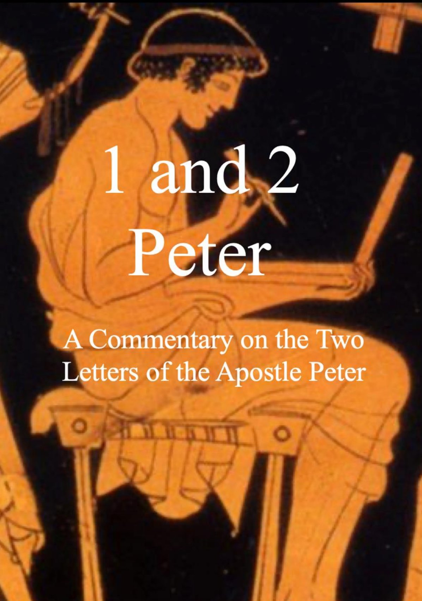

Peter
A Commentary on the Two Letters of the Apostle Peter
—
Joshua M. Haub
Researched and Published Independently
piiPublic Domain.
This work has been dedicated to the public domain by the author. To the fullest extent permitted by law, Joshua M. Haub hereby waives all copyright and related or neighboring rights to this work.
This book may be reproduced, stored, transmitted, adapted, and distributed in whole or in part, in any form or by any means, without permission, provided that proper attribution is given to the author when appropriate.
————————————————————————————
1 and 2 Peter: A Commentary on the Two Letters of the Apostle Peter
Joshua M. Haub
Year: 2026
————————————————————————————
Scripture quotations are from the New American Standard Bible, © 1960, 1962, 1963, 1968, 1971, 1972, 1973, 1977, 1995 by the Lockman Foundation. Used by permission. All rights reserved.
Cover image: Photo by Pottery Fan, of Greek pottery attributed to Douris (ca. 500 BCE). Wikimedia Commons. Licensed under CC BY-SA 3.0.
The views expressed in this book are those of the author and do not necessarily reflect the views of any particular institution or organization.
————————————————————————————
Printed in the United States of America.
ISBN 9798190617306
pivTo those who reside as aliens, and to those who have received the same kind of faith as ours.
Contents…………page 1.
Acknowledgements…………page 3.
Preface…………page 5.
About the Author…………page 6.
Bibliography for 1 Peter…………page 7.
Introduction to 1 Peter
“Peter, an apostle”…………page 9.
Authorship
External Evidence
Internal Evidence
Excursus: The Communication of 1 and 2 Peter: How Different Are They?…………page 10.
Dating
“She who is in Babylon”
Written from Rome?
Audience
Destination
Recipients
A Jewish Audience?
A Gentile Audience?
Themes
Purpose
1 Peter
1:1- …………page 34.
Bibliography for 2 Peter…………page 35.
Introduction to 2 Peter
“Simon Peter, a bond-servant and apostle”…………page 38.
Authorship
External Evidence
Internal Evidence
p2Excursus: Who Wrote 2 Peter? Assessing Its Authorship, Dating, and Early Reception…………page 40.
Dating…………page 46.
Audience…………page 46.
Destination…………page 46.
Recipients…………page 46.
A Jewish Audience?…………page 46.
A Gentile Audience?…………page 47.
2 Peter’s Sources
Jude
OT
Jewish Writings
Originally in Aramaic?
Themes
Purpose
2 Peter
1:1-…………page 50.
Works Cited…………page 77.
This work would not have been possible without the express help of several individuals. Firstly, I want to thank those whose shoulders I stand on. Without them, this book would be a shell of what it is today. You may read this commentary (or glance at certain parts) and notice the vast number of footnotes, citations, allusions, and influence from other works which I have repeatedly noted time and time again. You may get tired of seeing a number at the end of almost every sentence. I assure you, those numbers are there for a reason.
For 1 Peter, this work would not have been possible without these commentaries:
For 2 Peter, this work would not have been possible without these commentaries: Richard J. Bauckham, 2 Peter, Jude, WBC 50 (Waco, TX: Word, 1983); Michael Green, 2 Peter and Jude: An Introduction and Commentary, Tyndale New Testament Commentaries 18 (Downers Grove: InterVarsity, 1987); Joseph B. Mayor, The Epistle of St. Jude and the Second Epistle of St. Peter (London: Macmillan, 1907); and finally, Thomas R. Schreiner, 1, 2 Peter, Jude, New American Commentary 37 (Nashville: Broadman & Holman, 2003). I am deeply indebted to these for works. To them I owe a great deal of gratitude.
Secondly, I would like to thank several evangelists who have graciously given me permission to use (give them credit, more accurately) their material in this commentary. While it has been my usual practice in my various papers and other works to shy away from using “preacher material” and stuck with scholarly journals, books, and the like, I decided in this book to use what I thought my audience would find most helpful. The benefit of using the work of my fellow evangelists is their respective abilities to bring the text down to the applicable and relatable levels, at times even being more helpful than the many commentaries I read in writing this book. I have also, per the p4SBL handbook (which I followed for my formatting), included links to the various sermons and Bible studies referenced in this work so you, the reader, can go back and hear them for yourself. I, therefore, want to personally thank Jady Copeland, Lee Wildman, Gary Fisher, Andy Cantrell, … for their immense work and help as I compiled this commentary. Without their insight and teaching, I would not feel as confident publishing this book.
1 and 2 Peter are some of the riches letters in the New Testament. However, it seems to me that both letters have been unintentionally degraded to “books of popular quotations” rather than two letters with specific agendas. Many cite the “Tested by Fire” motif in 1 Peter 1:7; large sections of chapter 2, such as the “Stone” motif and Christian realities (2:4-10), excellent attitude (2:11-12), submission (2:13-20) which climax in Jesus’ attitude (2:21-25); husbands and wives (3:1-7); apologetics (3:15); baptism (3:18-22); suffering (4:12-19); anxiety (5:7); and Satan as a lion (5:8-9). While these are all pieces of the puzzle of 1 Peter, simply quoting these sections without diving into 1 Peter does them a disservice. 1 Peter was not written to be cherry picked but to be read in its own context.
The same goes for 2 Peter. Often it is quoted for its sections on the Transfiguration (1:16-18); prophecy (1:20-21); false teaching (chapter 2); falling away (2:21-22); the second coming of Jesus (3:3-15a); and perhaps the most quoted section of the letter, the reference to Paul and his work which is equated with “Scripture” (3:15b-16). Like 1 Peter, 2 Peter has an audience and a specific message. These two letters are letters, after all, not divine motivation quotebooks meant for motivational speeches.
It seems to me that since 1 and 2 Peter are quoted so often, a detailed analysis of both has gone by the waste side. Many feel that they understand the letters well, and perhaps they do. However, I believe a comprehensive commentary on both letters would do much good for both the reader and I.
My hope is that by writing this commentary, you will grow in your knowledge and understanding of these two letters. Any and all errors found within are my own. May God be glorified in this work.
To Him Be the Glory,
Joshua M. Haub
Joshua M. Haub was born and raised in Columbus, Indiana, and worshiped with the Lakeview church. He is currently a student at Florida College in Temple Terrace, Florida, studying Communication and Biblical Studies. He is an evangelist at the Lake Gibson church in Lakeland, Florida. He has been teaching the gospel for 5 years, including working with Ryan Boyer in Ellisville, Missouri, during the summer of 2024; working in Harrisburg, Pennsylvania, during the summer of 2025 with Scott Smelser and Stephen Rouse; and working with Andy Cantrell, Caleb Daniels, and Rick Lanning in New Hope, Minnesota, during the summer of 2026. He can be reached at haubfam2@gmail.com.
Bauckham, R. J. (1983). Jude–2 Peter (Word Biblical Commentary, Vol. 50). Word Books.
Best, E. (1970). “1 Peter and the gospel tradition.” New Testament Studies, 16, 95-113.
Boobyer, G. H. (1959). The indebtedness of 2 Peter to 1 Peter. In A. J. B. Higgins (Ed.), New Testament essays: Studies in memory of Thomas Walter Manson, 1893–1958 (pp. 34–53). Manchester University Press.
Dalton, W. J. (1979). “The interpretation of 1 Peter 3,19 and 4,6: light from 2 Peter.” Biblica, 60, 547–55.
Green, M. (1987). 2 Peter and Jude: An introduction and commentary (Tyndale New Testament Commentaries, Vol. 18). InterVarsity Press.
Grudem, W. A. (2024). 1 Peter: An introduction and commentary (Rev. ed., Tyndale New Testament Commentaries, Vol. 17). IVP Academic.
Gundry, R. H. (1966). “'Verba Christi' in I Peter: their implications concerning the authorship of I Peter and the authenticity of the gospel tradition.” New Testament Studies, 13, 336–350.
Guthrie, D. (1990). New Testament introduction (4th ed.). InterVarsity Press.
Harmon, M. S. (2023). “Jude and the Second Letter of Peter.” In G. K. Beale, D. A. Carson, B. L. Gladd, & A. D. Naselli (Eds.), Dictionary of the New Testament use of the Old Testament (pp. 412-5). Baker Academic.
Haub, Joshua M. "The Communication of 1 and 2 Peter: How Different Are They?" Unpublished senior paper, Florida College, 2026.
Jobes, K. H. (2023). “Peter, First Letter of.” In G. K. Beale, D. A. Carson, B. L. Gladd, & A. D. Naselli (Eds.), Dictionary of the New Testament use of the Old Testament (pp. 594–600). Baker Academic.
———. (p82022). 1 Peter (2nd ed.). Baker Academic. (Baker Exegetical Commentary on the New Testament)
Mayor, J. B. (1907). The epistle of St. Jude and the second epistle of St. Peter: Greek text with introduction, notes and comments. Macmillan.
Nestle-Aland. (2012). Novum Testamentum Graece (28th ed.). Deutsche Bibelgesellschaft.
Schreiner, T. R. (2003). 1, 2 Peter, Jude (New American Commentary, Vol. 37). Broadman & Holman.
Williams, T. B., & Horrell, D. G. (2023). 1 Peter: A critical and exegetical commentary (2 vols., International Critical Commentary). T&T Clark.
Young, R. (1997). Young's literal translation. Logos Bible Software.
Test
Text
Text
The Communication of 1 and 2 Peter: How Different Are They?*
Over time, the authorship claims of several New Testament books have come into question. Of all the letters attributed to Paul, only seven are considered by some scholars to be genuine. 1 and 2 Peter are among the other “questioned” letters. Who wrote these two letters? Did one person write both or was it two separate individuals? Both are attributed to Peter, but did he pen them, have them penned, or do they simply hold his authority? Richard Bauckham writes, “It can safely be said that if 1 and 2 Peter had been anonymous documents, no one would have thought of attributing them to a single author” (Bauckham, 1983, p. 145). But is Bauckham correct? While the question of authorship cannot be solved on the basis of the way both letters communicate, these two letters can be shown to be deeply connected in important ways which suggests they may be from a single source.
Joseph Mayor notes that “the style of 1 P. is clearer and simpler than that of 2 P., but there is not that chasm between them which some would try to make out” (Mayor, 1907, p. civ). He continues, “As to the use of the article, they [, 1 and 2 Peter,] resemble one another more than any other book of the N.T.” (Mayor, 1907, civ). Mayor works through several more grammatical characteristics and notes that they are very similar to one another (Mayor, 1907, civ). Mayor does note, however, p11that 2 Peter is much more ambiguous and difficult than 1 Peter. Mayor concludes by stating, “On the whole I should say that the difference of style is less marked than the difference in vocabulary, and that again less marked than the difference in matter, while above all stands the great difference in thought, feeling, and character, in one word of personality” (Mayor, 1907, cv).
William Dalton shows how 1 and 2 Peter are connected by examining how 2 Peter interprets 1 Peter 3:19 and 4:6. Before he discusses those passages, Dalton convincingly shows “great similarity in ideas and structure between 1 Pet 3,13-4:11 and 2 Pet 2,1-3,18” (Dalton, 1979, p. 551). Then, he turns to 1 Peter 3:19 and 4:6. Dalton notes that 1 Peter 3 is closely associated with 2 Peter 2 and that 1 Peter 3:19’s “spirits in prison” is parallel with “angels…committed…to pits of darkness” in 2 Peter 2:4. Dalton believes that 1 Peter 3:19-20 is a source for 2 Peter 2:4-5. 2 Peter 2:4-5 shows that 1 Peter 3:19-20 must be in reference to a proclamation to “sinful angels, a message that cannot be one of salvation” (Dalton, 1979, p. 553). Less convincing is his explanation of 1 Peter 4:6. He explains that this passage is connected with 2 Peter 3:7-12, stating that the “dead” in 1 Peter 4:6 are the Christians of 2 Peter, “who accept the reality of the Lord’s promise ‘of new heavens and a new earth in which righteousness dwells’ (3,9.13)” (Dalton 1979, p. 554).
G. H. Boobyer discusses how 2 Peter is indebted to 1 Peter. Boobyer sees 2 Peter 3:1f as a reference to 1 Peter 1:10-2. He cites B. Weiss’ view that when it comes to general Christian teachings, “‘no document in the New Testament is so like 1 Peter as 2 Peter’” (Boobyer, 1959, p. 35). Boobyer also cites Mayor’s list of parallels between the two letters: The Second Coming, Noah and seven persons being saved from the flood, μακροθυμία (“patience”) in 2 Peter 3:15 and 1 Peter 3:20, and “prophecy as a divinely inspired foretelling of Gospel events now announced by apostles” (Boobyer, 1959, p. 35). Also, note the exact p12reduplication of 1 Peter 1:2 and 2 Peter 2:2: “χάρις ὑμῖν καὶ εἰρήνη πληθυνθείη” (Nestle-Aland, 2012, 1 Peter 1:2), translated, “Grace to you and peace be multiplied” (Young’s Literal Translation, 1997, 1 Peter 1:2). Boobyer notes that πληθυνθείη “as the verb of a NT formula of greeting occurs only in 1 and 2 Peter and Jude” (Boobyer, 1959, p. 39). Boobyer insightfully comments that in the pursuit of establishing authorship for 2 Peter, many have either overstressed the resemblances with 1 Peter or exaggerated the disconnections depending on who they believe wrote 2 Peter (Boobyer, 1959, p. 36). He goes on to note how 1 Peter 1:3-9 and 2 Peter 1:3-11 seem to be closely connected. While this connection seems less satisfactory, the other data he provides is helpful in showing some of the similarities between the passages. Besides those already mentioned, he also sees connections between 1 Peter 1:10-2 and 2 Peter 1:12-21, and 1 Peter 5:1 with 2 Peter 1:16-8.
Donald Guthrie provides a helpful analysis of Boobyer’s work. In one section, Guthrie examines Boobyer’s evidence that 2 Peter is literarily dependent on 1 Peter. Guthrie notes, “His [Boobyer’s] justification for maintaining a literary dependence is based on his acceptance of 2 Peter’s literary use of Jude” (Guthrie, 1990, p. 852). At this point, Guthrie presses, “his evidence here would equally well support the contention that the same author wrote both 1 and 2 Peter, for in that case we should expect the kind of parallels to which he refers” (Guthrie, 1990, p. 852). Then, he questions Boobyer’s view that 2 Peter is pseudepigrapha yet 2 Peter 1:12-3 overflows from 1 Peter 1:10-2. Guthrie asserts, “this could equally well have happened in the mind of one man through association of ideas, as in two minds with one drawing from another” (Guthrie, 1990, 852).
Richard Bauckham maintains that the two letters have different styles and vocabularies, which has been noted since Jerome (Bauckham, 1983, p. 143). Bauckham states that the most important differences in the two letters “are not those of grammar and style but thought, themes, theological terminology…” (Bauckham, 1983, p. 145). For more of Bauckham’s observations, see The Greek of 1 and 2 Peter below.
There are many similarities and difference between these two letters. Boobyer is correct that both sides of the authorship debate surrounding 2 Peter must examine the evidence honestly and not overstate their case. As can be seen, there are many similarities, differences, and connections between 1 and 2 Peter. It seems reasonable to state that these letters are correctly put side-by-side in the NT. At the very least, they share some of the same thoughts, subject matters, and other qualities mentioned above. But there are also many differences. As will be noted throughout the rest of this study, there are more similarities, differences, and connections that are important to note in understanding the authorship of these letters. Based on those stated so far, there does seem to be some sort of connection between these two letters.
One of the most significant questions concerning 1 and 2 Peter is their different Greek styles and vocabulary. Often, the Greek of 1 Peter is deemed an “elevated style of Greek” (Williams and Horrell, 2023, p. 125). Wayne Grudem rightly states, “The Greek may be said to be excellent, but to say it is a literary masterpiece is probably an overstatement” (Gruden, 2024, p. 7). The difference in the style of Greek of both letters is important but should be neither underplayed nor overstated. A balanced approach is necessary.
One of the most helpful works on the Greek of 1 Peter is Karen Jobes’ excursus in her commentary on 1 Peter. She evaluates the Greek of 1 Peter by using criteria of what would be usual Greek tendencies for a Semitic individual when writing Greek. These tendencies include things such as the way prepositions are used, the use of articles, and others, totaling 17 criterions. She notes that “of the fourteen criteria relevant to 1 Peter, nine clearly fall on the side of the scale showing p14Semitic influence” (Jobes, 2022, p. 329). This means that 1 Peter is not written as someone whose first language was Greek would have. Instead, it seems to be written by a Semitic person (e.g., possibly a Jewish person). Although Jobes notes “the style of 1 Peter, with its long sentences and rhetorical elements, may suggest someone who has a greater proficiency in Greek than would be expected of a Galilean fisherman. Nevertheless, Semitic interference is indicated…” (Jobes, 2022, p. 331). Because of Silvanus’ mention of 1 Peter 5:12 as a possible scribe, Jobes examines 1 Thessalonians (another letter noting Silvanus). What Jobes found was that 1 Thessalonians and 1 Peter are very similar in their use of Greek, both leaning toward Semitic influence. Jobes concludes, “The major conclusion drawn from this study is that the extent of Semitic interference in the Greek of 1 Peter indicates an author whose first language was not Greek” (Jobes, 2022, p. 334, italics added).
Michael Green is also helpful in evaluating the Greek of 1 and 2 Peter. Like Williams, Green notes that the Greek of 1 Peter is “polished, cultured, dignified; it is among the best in the New Testament” while 2 Peter is “grandiose…like baroque art, almost vulgar in its pretentiousness and effusiveness” (Green 1987, pp. 23-4). He suggests that 1 Peter may be the work of Silvanus (Green, 1987, p. 24). Green states that 1 and 2 Peter have as many remarkable stylistic resemblances as they do differences. Both letters have “strong Hebraisms and the striking habit of verbal repetition…these are features likely to have survived through the employment of different secretaries” (Green, 1987, p. 24). Green argues that while some of 1 Peter’s frequent words are missing in 2 Peter, “others are replaced with synonyms” (Green, 1987, p. 24). Green cites several scholars who argue the similarities between 1 and 2 Peter. First, Joseph Mayor who said, “‘There is not that chasm between 1 and 2 Peter which some would try to make out;’” then, B. Weiss’ conclusion on a linguistic analysis, “‘the Second Epistle of Peter is allied to no New Testament writing more closely than to his First;’” Holzmeister who “showed that 1 and 2 Peter p15are as close linguistically as 1 and 2 Corinthians;” A. E. Simms who demonstrated that 1 and 2 Peter are as close “on the score of words used” as 1 and 2 Timothy (which have a unified author); and finally A. Q. Morton who wrote that “from cumulative sum analysis on the computer…1 and 2 Peter are indistinguishable linguistically’” (Green, 1987, pp. 24-5).
Joseph Mayor lists 3 comprehensive charts of the Greek words that are used in both 1 and 2 Peter, only in 1 Peter, and only in 2 Peter. For words used in both letters, he totals 100. For words used only in 1 Peter, he notes a total of 369 (59 are hapax legomena (Greek words only found here in the NT)). For words used only in 2 Peter, he notes 230 (56 are hapax legomena). The final count is 100 words used in both and 599 that are not (Mayor, 1907, pp. lxix-lxxiv). Mayor concludes that “The Greek of the one is not by the same hand as the Greek of the other” (Mayor, 1907, lxxiv). However, as noted before, after a complete analysis of the Greek of both letters, Mayor notes that they are more similar than sometimes stated (see quote on previous paragraph).
Richard Bauckham states that 2 Peter “must be related to the ‘Asiatic’ style of Greek rhetoric which was coming into fashion in 2 Peter’s time…with its love of high-sounding expressions, florid and verbose language, and elaborate literary effects” (Bauckham, 1983, p. 137). Bauckham questions if there are any “genuine mms” (Bauckham, 1983, p. 138). However he concludes that “a native Semitic speaker cannot be ruled out” but suggests another possibility is “a native Latin speaker” (Bauckham, 1983, p. 138).
Bauckham also compares 2 Peter’s Greek with 1 Peter’s, much like Mayor. He states Holzmeister’s percentages: “38.6 percent [of words used in 2 Peter] are common to 1 and 2 Peter, 61.4 percent peculiar to 2 Peter, while…the words used in 1 Peter…28.4 percent are common to 1 and 2 Peter, [and] 71.6 percent peculiar to 1 Peter” (Bauckham, 1983, p. 144). 1 and 2 Peter both have a large number of p16hapax legomena, showing that the author(s) had a wide vocabulary (Bauckham, 1983, p. 144). Finally, Bauckham states that the common words in both letters are “mostly very common words” with only ἀπόθεσις being “used exclusively in 1 and 2 Peter among the NT writings” (Bauckham, 1983, p. 144). While he deems the following list “not very impressive,” he does share possible “characteristics” of words used in both letters: ἀναστροφή, ἂσπιλος, ἀρετή, and φιλαδελφία (Bauckham, 1983, p. 144). He also shows that the letters choose to use different words for the same idea. For the Second Coming of Christ, παρουσία is used in 2 Peter 1:16, 3:4, 3:12 and ἀποκάλυψις in 1 Peter 1:7, 1:13, 4:13 (and φανεροῦν in 5:4). Bauckham makes an important statement, “Of course, both letters are relatively short, are evidently directed to different issues and situations, and deal on the whole with different subjects.” However goes on to state “if 1 and 2 Peter had been anonymous documents, no one would have thought of attributing them to a single author” (Bauckham, 1983, p. 145).
Michael Green writes that 2 Peter has Aramaic thought behind it, footnoting Chaine who lists a host of Semitisms behind 2 Peter (Green, 1987, p. 27, footnote 28). The footnote continues, stating that G. Wohlenberg suggested that 2 Peter may originally have been in Aramaic and then translated into Greek (Green, 1987, p. 27, footnote 28). Green also wrote an article titled, “2 Peter Reconsidered,” in which he notes some of the Hebraisms in the letter. He lists “φθοπᾷ φθαρήσονται, καταρᾶς τέκνα, and τοὺς ὀπίσω σαρκὸς πορενομένους” (Green, 1960, p. 11). He goes on to note that the form of Peter’s name in 1:1 may be “a genuine Hebraism used by Peter himself” (Green, 1960, p. 14). If it is not, Green suggests an alternative that it is “a brilliant archaism without parallel in the writings of the second century, including the whole corpus of pseudo-Petrine literature” (Green, 1960, p. 14).
p17The Greek of both letters is a complicated issue. However, at times there can be a temptation to overstate how different the Greek of these two letters are. The Greek of both is clearly different, however Bauckham’s note that they are short letters to different groups in different situations is important. In both letters, there seems to be signs of a possible Semitic speaker or at least influence and an overlap of some Greek words. While it is unclear if both letters come from a common source, the different style and word choice does not outweigh the possibility that the author of the letters simply made choices based on the need of his audiences, resulting in completely different letters. While this result seems far from satisfying on its own, it may be the case if other evidence works to show a common author.
Karen Jobes wrote the entry on “1 Peter” in D. A. Carson’s Dictionary of the New Testament Use of the Old Testament (2023). In it, she notes that 1 Peter primarily quotes from the Septuagint (“LXX” used for the first five books. “Old Greek” is used for the rest of the OT). Jobes notes two primary purposes for 1 Peter’s use of OT: “to explain that Jesus was the Messiah, who, it was predicted, would suffer and die (prophetic interpretation)” and “to explain how Christian believers are to live out their new live in Christ” (Jobes, 2023, p. 594). Jobes notes that there are two OT sections that are prominent in 1 Peter: Psalm 34 (OG) and Isaiah, along with many other connections. See Table 1.
| 1 Peter | Exodus | Leviticus | Psalms | Proverbs | Isaiah | Hosea | Other |
|---|---|---|---|---|---|---|---|
| 1:1 | Israelite Exile | ||||||
| 1:2 | 24:3-8 | ||||||
| 1:3 | 34:2 (33:2 OG) | ||||||
| 1:6 | 33:20 (OG) | ||||||
| 1:16 | 19:2 | ||||||
| 1:17 | 33:5, 8 (OG) | ||||||
| 1:18 | 33:23 (OG) | ||||||
| 1:24-5 | 40:6-8 | ||||||
| 2:3 | 33:1ff (OG); 33:9 (OG) | ||||||
| 2:4-8 | 118:22 (117:22 OG) | 8:14, 28:16 (OG) | |||||
| 2:6 | 33:6 (OG) | 28:16 (OG) | |||||
| 2:7 | 117:22 (OG) | ||||||
| 2:8 | 8:14 | ||||||
| 2:9 | 19:5-6 (LXX) | 43:4, 20-1 (OG) | |||||
| 2:10 | 2:23 (2:25 OG) | ||||||
| 2:11 | 33:5 (OG) | ||||||
| 2:17 | 33: 10, 12 (OG) | ||||||
| 2:18-3:7 | 53:1ff | ||||||
| 2:22 | 53:9 (OG) | ||||||
| 2:23 | 53:7 | ||||||
| 2:24 | 53:4-5 (OG) | ||||||
| 2:25 | 53:6 (OG) | ||||||
| 3:6 | Abraham and Sarah (cf. Gen 18:22 LXX) | ||||||
| 3:10-2 | 33:12-7 (OG) | ||||||
| 3:12 | 33:18 (OG) | ||||||
| 3:14-5 | 8:12-3 (OG) | ||||||
| 3:20-1 | Noah and Flood | ||||||
| 4:8 | 10:12? | ||||||
| 4:14 | 11:2 | ||||||
| 4:18 | 11:31 (OG) | ||||||
| 5:5 | 3:34 (OG) | ||||||
| 5:13 | Israelite Exile |
Information from Jobes (2023, p. 594-600). Note: 4:8 and Proverbs 10:12 is marked with a “?” due to Jobes’ comment that this is probably not a quotation but rather Peter utilizing a “proverbial use” of the proverb “that was in circulation” at that time (Jobes, 2023, p. 597).
Jobes notes that 1 Peter’s use of the OT shows that he viewed the OT as authoritative and being fulfilled in Jesus (Jobes, 2023, p. 599). She also observes that the use of OT in this letter “contribute[s] specific content to Peter’s thought, some of it distinctive and unique within the NT” (Jobes, 2023, p. 599). She makes two lists: “Contributions to Christology” (9 listed) and “Instructions for Christian life” (12 listed) (see Jobes, 2023, p. 599-600). Jobes concludes with stating that the use of OT in 1 Peter is meant to “orient its readers…to see themselves drawn by faith in Jesus Christ into the long and magnificent heritage of Israel” (Jobes, 2023, p. 600). Deeply connected are the sections on Jesus (Christology) and one’s new life in Jesus (paraenesis). Finally, in her commentary on 1 Peter, Jobes notes that 1 Peter is similar to Romans and Hebrews in OT reference frequency (Jobes, 2022, p. 46). Also, she mentions that at times 1 Peter quotes the LXX/OG exactly while other times it is slightly different forms of the text, possibly suggesting a different version was available to 1 Peter (Jobes, 2022, p. 47).
Matthew Harmon wrote the entry on “2 Peter and Jude” in D. A. Carson’s Dictionary of the New Testament Use of the Old Testament (2023). For 2 Peter, Harmon notes that the letter seems to, on some level, know Second Temple Jewish texts and traditions and uses them “potentially in the way that… [2 Peter] interpret[s] OT texts” (Harmon, 2023, p. 412). Also, 2 Peter frequently refers to OT people and events without noting specific passages. Harmon states, “As a result, it can be difficult to determine the OT text form… [2 Peter] use[s]” (Harmon, 2023, p. 412). There are three main theological themes in 2 Peter: “the Word of God, God’s judgment on his enemies and salvation of his people, and the return of Christ to consummate a new creation” (Harmon, 2023, p. 412). See Table 2.
| 2 Peter | Genesis | Numbers | Psalms | Proverbs | Isaiah | Habakkuk | Malachi | Other |
|---|---|---|---|---|---|---|---|---|
| 1:11? | Daniel 7:27 (OG)? | |||||||
| 1:17 | 22:2, 12, 16 | 2:7; 8:5 (8:6 OG)? | 42:1 | Daniel 7:14? | ||||
| 1:19 | 24:17-9 | 19:8; 37:6; 46:5; 130:6; 119:105, 130 | 9:2 | 4:2 | Luke 1:78-9; Song of Songs 2:17? | |||
| 2:2 | 52:5 (OG) | |||||||
| 2:4 | 6:1-4 | Jewish Interpretations of Gen 6:1-4 (“e.g., Jub. 4:15-5:9; T. Reu. 5:6-7; T. Naph. 3:5” (p. 413)) | ||||||
| 2:5 | 6:17 LXX | |||||||
| 2:6-8 | chs. 18-9 (19:29 LXX) | |||||||
| 2:15-6 | chs. 22-4 (22:21-35) | |||||||
| 2:20-2 | 26:11 | |||||||
| 3:5 | 1:1; 1:9-10 | 24:2; 102:25 | ||||||
| 3:6 | Noah and the Flood (cf. Gen 6-8) | |||||||
| 3:7 | 9:11 | |||||||
| 3:8 | 90:4 (89:4 OG) | |||||||
| 3:9, 12-4 | 2:3 | |||||||
| 3:12 | 34:4 (OG); 60:22? | |||||||
| 3:13 | 32:16; 60:21; 65:17 (OG) (cf. 43:16-21; 51:3; 66:22) |
Information from Harmon (2023, p. 412-5). Also, Bauckham’s (additional) observations (discussed below) included in italics (see Bauckham, 1983, p. 138). Note: Isaiah 60:22 marked with a “?” due to Harmon’s comment that Peter may be drawing on Jewish tradition but still may be an allusion to Isaiah, noting some Jewish texts that connect the idea of “God hastening the end, sometimes in connection with Israel’s repentance” (Harmon, 2023, p. 415). Observations from Bauckham (italics) which have “?” indicate possible (but uncertain) allusions.
p22Harmon concludes, “The frequently allusive manner in which 2 Peter… use[s] the OT assumes the reader is so familiar with those OT persons and events that even a name or a brief phrase is enough to evoke the entire OT context of that reference” (Harmon, 2023, p. 415). It seems to Harmon that 2 Peter does not so much directly quote (or cite) the OT as much as it does allude to and (potentially) echo it. Harmon notes that the main way that 2 Peter uses the OT is by blending “analogies and typology, with the line between those categories not always clear” (Harmon, 2023, p. 415). 2 Peter uses “stock-in-trade language from the OT” to describe false teachers (Harmon, 2023, p. 415).
Bauckham also lists possible allusions to the OT in his commentary on 2 Peter. See Table 2 above. He notes that “unlike Jude, 2 Peter’s allusions are habitually to the LXX” (Bauckham, 1983, p. 138). Bauckham then lists 2 Peter passages that “correspond to the language of the LXX” (Bauckham, 1983, p. 138), including:
“1:11 (Dan 7:27 θ, LXX); 1:17 (Ps 8:6); 1:19 (Num 24:17); 2:2 (Isa 52:5); 2:5 (Gen 6:17); 2:6 (Gen 19:29); 3:12 (Isa 34:4); 3:13 (Isa 65:17). In the following cases the allusion is certainly not to the LXX version: 1:19 (Cant 2:17); 2:22 (Prov 26:11); 3:9, 12–14 (Hab 2:3); 3:12 (Isa 60:22), but in all except the first of these cases the author has probably taken the allusion from an intermediate source” (p. 138). These are found in Table 2 above.
Bauckham goes on to state that because of 2 Peter’s familiarity with the LXX/OG, the phrases in the letter that are typical in the LXX/OG should be listed: “πορεύεσθαι ὀπίσω, 2:10; ἐπʼ έσχἀτων τῶν ἡμέρων, 3:3; ποῦ ἐστιν; 3:4” (Bauckham, 1983, p. 138). He also affirms that the author may be familiar with “extrabiblical Jewish haggadic traditions (2:4-5, 7-8, 15-16)” (Bauckham, 1983, p. 138).
p231 and 2 Peter are both full of OT references. There are a few overlapping OT references in these two letters. The clearest is Noah and the Flood (1 Peter 3:20-1 and 2 Peter 3:6). Both letters also have a (distant) reference to Isaiah 43 (1 Peter 2:9 with Isaiah 43:3, 20-1 (OG) and 2 Peter 3:13 with Isaiah 43:16-21). Another (distant) reference may be found in Israelite Exile in 1 Peter 5:13 with Daniel and 2 Peter 1:11, 17 with Daniel 7:14 and 7:27 (OG), but the 2 Peter reference is questioned by Bauckham (see above). There is also a connection in Genesis 18-9 (LXX) (1 Peter 2:9 with Genesis 19:5-6 and 2 Peter 2:6-9 with Genesis 19:29). In addition to these connections, both books cite from three of the same OT books: Psalms, Proverbs, and Isaiah. Outside of Isaiah 43, these books share no OT reference in these respective books. However, passages in Psalms and Isaiah that are referenced are near one another (see Tables 1-2 above).
Of interest is 1 and 2 Peter’s commitment to the LXX/OG version of the OT. As stated above, Jobes and Bauckham note in their respective works that 1 and 2 Peter use this translation the majority of the time. The use of a single translation for most of the references in these letters shows another layer of similarity between these two letters. However, the LXX/OG is a common translation in the New Testament, so the connection here must not be pressed too far. If Jobes is correct that the readers of 1 Peter are supposed to see themselves as joining Israel’s heritage found in the OT, then the readers of 2 Peter have already done that, having become, in Harmon’s words, “so familiar with those OT persons and events that even a name or a brief phrase is enough to evoke the entire OT context of that reference” (Harmon, 2023, p. 415).
1 Peter has several connections with the Gospels and their traditions. Before exploring them, there are a few things about the Gospels that p24must be noted. When a connection is identified between the Gospels and another writing, the key question becomes whether the author of the other writing (here, 1 Peter) knew what Jesus said or only what the Gospel author wrote. Some scholars do not believe the words of Jesus in the Gospels are his actual words, but simply what he either was believed to have said or what his teachings meant. This is called ipsissima verba (“the very words”) and ipsissima vox (“the very voice”). Therefore, the question if often raised whether the connections in 1 Peter are to the written Gospels, their traditions, or to Jesus himself.
Robert Gundry wrote an extensive article on the connections between 1 Peter and the Gospels. His connections are noted in Table 3 (see below). Of all the verba Christi (Jesus’ words) in 1 Peter, “only two are not directly related to gospel contexts in which the Apostle Peter plays a prominent part or would have had a special interest” (Gundry, 1966, p. 348). The two places are 1 Peter 1:8 with John 20:29 and 1 Peter 1:23-2:1 with John 3:3, 7. Gundry also qualifies that there are certain teachings in 1 Peter that could connect back to the Sermon on the Mount but because they are also taught in other NT epistles, they cannot be used to show a dependence on the Gospels and Jesus. However, the connections are still noted in Table 3 below.
I do not believe that all of the connections Gundry makes are necessarily accurate. It seems that one could make connections just about anywhere if one tries. Even Gundry himself says, “Several of the Dominical sayings reviewed… may be questioned” (Gundry, 1966, p. 348). However, his work shows that there are connections with the Gospels and Jesus’ teachings which cannot be overlooked. The presence of teachings from Jesus in 1 Peter which Peter himself was present for are significant. Gundry writes, “It is unthinkable that a pious forger who knew the gospel tradition cleverly inserted very allusive references to verba Christi from only those parts which Peter would most likely have remembered” (Gundry, 1966, p. 348).The attributed author, then, includes material that he himself was present to hear. See Table 3 on the next page.
| 1 Peter | Matthew | Mark | Luke | John |
|---|---|---|---|---|
| 1:3 | 3:3, 7 | |||
| 1:4 | 12:33 | |||
| 1:6 | 5:10ff | |||
| 1:8 | 20:29 | |||
| 1:10-2 | 24:25f | |||
| 1:13 | 8:3 | 12:32, 35, 45 | ||
| 1:21 | 14:1, 6 | |||
| 1:22 | 8:34f, 15:12 | |||
| 1:23 | 3:3, 7 | |||
| 2:1 | 3:3, 7 | |||
| 2:4, 7 | 16:18; 21:42 | 7:10 | ||
| 2:9 | 5:16 | |||
| 2:12 | 5:16 | |||
| 2:13-7 | 17:26f | |||
| 2:18ff | 5:10ff | 6:27ff | ||
| 2:19f | 6:32-5 | |||
| 2:24 | 10:2-18 | |||
| 2:25 | 10:11, 14 | |||
| 3:8 | 13:5ff | |||
| 3:14 | 5:10 | |||
| 4:7 | 8:3; 14:32-42 | 21:31, 34, 36 | ||
| 4:8 | 8:34f, 15:12 | |||
| 4:13f | 5:10ff | |||
| 4:19 | 23:46 | |||
| 5:2 | 12:32 | 10:11, 14; 21:15-7 | ||
| 5:3 | 8:4f | |||
| 5:3-5 | 20:25-8 | 10:42-5 | 22:25-30 | |
| 5:4 | 10:11, 14 | |||
| 5:8f | 26:40 | 8:3; 14:38 | 22:31f |
Information from Gundry (1966, p. 337-348).
p26Ernest Best, however, responded to Gundry (and others). He walks through many of the alleged connections and notes that the only connections that seem correct are blocks of texts in Luke 6 and 12 along with two isolated sayings: Matt 5:16 and Mark 10:45 (and possibly Matt 5:10).
Best makes an important observation: “knowledge of the gospel tradition on the part of any author in the N.T. does not logically imply that he was present when that part of the gospel tradition was spoken by Jesus” (Best, 1970, p. 95). Paul, for example, knows of Jesus’ teachings but that does not mean he was necessarily with Jesus when he taught them.
It seems to me, however, that while Best is helpful in balancing the possible connections, he is sometimes unfair in his use of criteria, as Gundry notes concerning 1 Clement (see below). In one part of the article, Best states if Mark 10:45 was a true saying of Jesus, then 1 Peter 1:18 would be dependent on it, but since Titus 2:14 is closer to Mark than 1 Peter is, “We cannot conclude that the author of 1 Peter was present when the logion was spoken without suggesting that the author of Titus was also present” (Best, 1970, p. 99-100). Here, Best overlooked that the author of Titus does not claim to be an eye-witness as 1 Peter does (by implication of its alleged author). Correctly, however, Best concludes that Mark 10:45 as a saying which 1 Peter is connected.
Gundry responded to Best and pointed out issues with Best’s rebuttal. He states that “The standards by which allusions are judged genuine drop in the comparisons between 1 Clement and Lk 6” (Gundry, 1970, p. 232). He also maintains that his thesis was not that Peter used the Gospels but that “he used traditions deriving from his own memory and independently written by others in the gospels” (Gundry, 1970, p. 221, italics added). While Gundry may draw too many connections, Best appears to recognize too few. The evidence is best understood as lying somewhere between these two positions.
p27Thomas Lea gives an interesting case study of one instance of a possible connection between 1 Peter and the Gospels. Assuming Petrine authorship, he examines the use of what he calls “stone theology.” In 1 Peter 2:4-8, Peter uses three different words for “stone” (λίθος, πέτρα, and ἀκρογωνιαῖον). Lea notes “No other part of Scripture makes such extensive reference to stone and rock in relation to Jesus Christ as does this brief portion of I Peter” (Lea, 1980, p. 97). In this passage, Peter uses Psalm 118:22-3, Isaiah 8:14, and Isaiah 28:16. Lea suggests that Peter learned to use these passages from his time with Jesus, noting that Jesus himself used Psalm 118:22 in Matthew 21:42 (parallel: Mark 12:10-1 and Luke 20:17). Lea states, “In each reference to the Old Testament there is a close conformity to the text of the Septuagint in the portion quoted, and this distinctive quality is true also of the reference to the Psalm appearing in I Peter 2:7” (Lea, 1980, 98). Lea suggests that Peter would have been at this event to hear Jesus quote this Psalm. Interestingly, Peter also quotes the Psalm in Acts 4:11. Additionally, there is a possibility that Luke 20:18, directly following Jesus’ use of Psalm 118, could have influenced Peter’s mind to think of Isaiah 8:14-5 (Lea, 1980, p. 99). This to me, however, seems less likely.
Lea, importantly, acknowledges that there are other sources which use “stone theology,” such as Paul (see Romans 9:33 and Ephesians 2:20). Lea, therefore, says that it is possible Peter was “influenced by these sources in addition to Jesus, or it is possible that all three may have their usage of stone theology traced to a common source” (Lea, 1980, p. 100). Finally, Lea notes that because of Peter’s nickname (“Πέτρος”) he would have been interested in “stone” and “rock” motifs from Jesus. All this points Lea to see Jesus as a (likely) source for Peter’s understanding of these OT passages, especially Psalm 118.
Richard Bauckham notes four allusions (and other possible ones) to the Gospels in 2 Peter. See Table 4.
| 2 Peter | Matthew | Mark | Luke | John |
|---|---|---|---|---|
| 1:14 | 21:18 | |||
| 1:16-18 | Closest (deemed an independent tradition); 16:28? | 9:1? | ||
| 2:9 | 6:13? | |||
| 2:20 | 12:45 | 11:26 | ||
| 2:21 | 9:42? 14:21? | |||
| 3:4 | 9:1 (parallel: 13:30)? | |||
| 3:10 | 24:43 | 12:39 (cf. 1 Thess 5:2) |
Information from Bauckham (1983, p. 148). Note: Passages marked with a “?” Bauckham states are possible but not definite allusions and/or echoes.
p29Bauckham states the author of 2 Peter seems to know Gospel tradition independent of the Gospels we use. He continues on to say that of the four we use, Matthew is the most likely source.
Boobyer and Schreiner give even more possible allusions in their respective works. Boobyer notes the use of the word ἔξοδος in 1:15, which is the same word used in Luke 9:31 for Jesus’ departure (Boobyer, 1959, p. 45). Schreiner connects “honor and glory” (1:17) with the Transfiguration, suggesting that Jesus’ face was glorious (Luke 9:29, 32) and God’s message was honorable (Matt 17:5, Mark 9:7, and Luke 9:35) (Schreiner, 2003, 315).
Thanks to the work of these scholars, it seems that both epistles use either Gospels traditions or the Gospels more directly. Interestingly, both books have possible allusions from all four Gospels, showing at the very least a diverse understanding of the life and teachings of Jesus, although some are heavily disputed, as Best showed. Schreiner is helpful here, commenting that when evaluating 2 Peter and the Gospels, one must remember that if he was an eye-witness, he was recalling events from memory and not necessarily from the four written Gospels, but does suggest Peter may have relied on Matthew (Schreiner, 2003, 315-6).
Notably, Mayor suggests that 1 Peter is written exactly how one would expect the apostle Peter to have written (Mayor, 1907, cxiii). He does not believe this holds true for 2 Peter. However, it seems that Mark 9:9 sheds light on 2 Peter 1:16-8. Jesus instructed Peter (and others) to not share their experience on the mountain until after his resurrection. Whether one believes this is historical or a literary device, it is interesting that the Transfiguration is not again mentioned in the NT until 2 Peter, a letter said to have been written by an eye-witness of the event. Either a clever reader of Mark saw the note and decided to use it as he embodied Peter, or Peter himself understood that now, years after Jesus’ resurrection, it was appropriate for him to discuss such a p30powerful event in his life. The underlying connections to the Gospels in these two letters give support to an author well-developed in Jesus’ teachings.
Travis Williams writes that there has been debate over if 1 Peter was directly influenced by Pauline letters (like Romans and Ephesians). According to Williams, the current consensus is that the similarities between 1 Peter and Pauline literature are because of “‘the use of common tradition in early Christianity’” (Williams and Horrell, 2023, p. 65). Williams and Horrell, therefore, believe that 1 Peter was not a “quasi-Pauline document, standing firmly in Pauline tradition” (Willaims and Horrell, 2023, p. 65) but rather uses early Christian traditions. Williams continues, stating some of the similarities, differences, and connections between 1 Peter and Paul’s letters. Firstly, the opening and closing of 1 Peter seem to follow Paul’s pattern (however, there are differences). Such similarities are ἀπόστολος Ἰησοῦ Χριστοῦ (“Apostle of Jesus Christ,” 1:1) and χάρις ὑμῖν καὶ εἰρήνη (“Grace to you and peace,” 1:2). Williams notes that the following word in 1:2, “πληθυνθείη,” is “unknown in the Pauline letters but found…in Jewish epistolary tradition…and in the greetings of Jude, 2 Peter, and 1 Clement” (Williams and Horrell, 2023, p. 67, italics added). Next, Williams notes the similarities between 1 Peter 1:3-9 and Eph 1:3-14. He also points out “the most striking link with Paul is the exhortation ἀσπάσασθε ἀλλήλους ἐν φιλήματι ἀγάπης ([“Greet one another with a kiss of love,”] 1 Pet 5:14), which is paralleled only, and almost precisely, in Paul (Rom 16:16; 1 Cor 16:20; 2 Cor 13:12; 1 Thess 5:26)” (Williams and Horrell, 2023, p. 69). He goes further, “There is a distinction between Paul’s holy kiss…and 1 Peter’s kiss of love…though this is hardly enough to establish the independence…of 1 Peter from Paul” (Williams and Horrell, 2023, p. 69). Williams p31concludes that there is likely “some kind of Pauline influence on 1 Peter” (Williams and Horrell, 2023, p. 69). Then, Williams comments that “the particular formulation of paraenetical tradition found in 1 Peter seems to reflect Pauline influence” with Romans being a likely sort of source for 1 Peter’s author (Williams and Horrell, 2023, p. 70). Williams footnotes a rebuttal against those who would reject any form of Pauline influence on 1 Peter and state that the only connection between them is common tradition. Williams challenges those who claim no literary relationship between Romans and 1 Peter, stating that if both Romans and the author of 1 Peter were in the same place at the same time, why not see Romans to be a source for 1 Peter? Additionally, Williams sees a connection between 1 Peter 2:13-7 and Romans 13:1-7, noting “1 Peter’s household-code teaching and exhortations about submission to the governing authorities seem to reflect the influence of Pauline tradition” (Williams and Horrell, 2023, p. 71-2). There are also several parallels between the phrasing and terminology in both 1 Peter and Pauline literature such as ἐν Χριστῷ (1 Peter 3:16; 5:10, 14), which “occurs…[outside Paul’s letters] in the NT only in 1 Peter” (Williams and Horrell, 2023, p. 72). For more, see Williams and Horrell, 2023, p. 72. In conclusion, Williams states that “1 Peter shows clear signs of awareness of and dependence upon Pauline language and tradition” (Williams and Horrell, 2023, p. 73).
Richard Bauckham states that 2 Peter knew at least some of Paul’s letters because 2 Peter 3:15 calls them “Scripture” (Bauckham, 1983, p. 147). However, he goes on to say that “there is little sign of Pauline influence in 2 Peter” (Bauckham, 1983, p. 147). Bauckham includes Lindemann’s conclusion that “2 Peter is entirely uninfluenced by Pauline theology and contains no allusion to the Pauline letters” (Bauckham, 1983, p. 147). Bauckham gives the only allusions he sees as even possible: 2 Peter 2:19 with Romans 8:21 (cf. 6:16; 7:5), 2 Peter 3:15 with Romans 12:3 (cf. 15:15), and 2 Peter 3:10 with 1 p32Thessalonians 5:2. He says, “They are far from certain” (Bauckham, 1983, p. 147). It may be that 2 Peter did not see Paul’s work as relevant to his own, but this may be unsatisfactory as a complete explanation (Bauckham, 1983, p. 148). Bauckham offers another possibility: “the author’s theological thinking and terminology were formed before he had much contact with Pauline theology, and that a collection of Paul’s letters was only just coming into use at the time when he wrote” (Bauckham, 1983, p. 148).
1 and 2 Peter’s relationship with Paul are clearly different. 1 Peter seems to be influenced by Paul, either by common tradition or Paul himself or both. There are several components of 1 Peter that remind the reader of Paul. The same cannot be said about 2 Peter. Interestingly, however, while 1 Peter seems influenced by Paul, it is 2 Peter that refers to him directly. It may be that despite Bauckham (and Lindemann) seeing it as very unsatisfactory, the reason for a lack of Pauline influence on 2 Peter is due to 2 Peter’s focus—simply because he could have used Paul does not by necessity mean he needed to. As Bauckman noted as a possible answer: 2 Peter could have developed his own respective theological thinking and terminology before he read much of Paul’s work. If Petrine authorship is accepted, then this possibility may be plausible. However, when it comes to 1 and 2 Peter and Paul, it seems that these letters are quite different in their relationship to him.
From a careful study of the material presented here, these two letters seem to be closer aligned than Bauckham suggests (see Bauckham, 1983, p. 145). While they are by no means identical to one another in their presentation, style, vocabulary, or the like, they do share important similarities, such as the Semitic nature of both letters, use of OT and its characters and events, connection to the Gospels (both to Jesus’ p33teachings and events involving Peter), and other general similarities discussed above.
While the question of joint authorship of these two letters cannot be finalized based solely on a literary analysis, it can be shown that these books are deeply connected in some important ways, which may lead the way to a “single-author” conclusion. There is more work to be done on the question of Petrine authorship, but these specific pieces of evidence demonstrate that the relationship between the two letters is defined by more than their differences. Boobyer is correct: “The resemblances and differences between these writings seem to have been examined mainly…as an aspect…of the authorship [question] of 2 Peter. This may have led those concerned to establish a common authorship…to overstress the resemblances, whilst those convinced that the second was not by the same hand…could have exaggerated the disconnectedness” (Boobyer, 1959, p. 36). When the similarities and differences are evaluated honestly, there is a strong reason to take the opening words of these letters at face value: “Peter, an apostle of Jesus Christ.”
Text
Aland, Kurt. “The Problem of Anonymity and Pseudonymity in Christian Literature of the First Two Centuries.” Journal of Theological Studies n.s. 12, no.1 (April 1961): 39-49.
———, Matthew Black, Carlo M. Martini, Bruce M. Metzger, and Allen Wikgren, eds. The Greek New Testament. 3rd ed. Stuttgart: United Bible Societies, 1975.
Athanasius of Alexandria. “Festal Letter 39.” Early Church Texts, accessed April 10, 2026, https://earlychurchtexts.com/public/athanasius_39th_festal_letter.htm.
Augustine. On the Spirit and the Letter (De spiritu et littera), chap. 52. In Nicene and Post-Nicene Fathers, First Series, vol. 5. Translated by Peter Holmes and Robert Ernest Wallis. Buffalo, NY: Christian Literature Publishing Co., 1887. New Advent, https://www.newadvent.org/fathers/1502.htm.
Bauckham, Richard J. Jude, 2 Peter. Word Biblical Commentary 50. Waco, TX: Word, 1983.
Cantrell, Andy, and Ben Hall. “An Introduction to 2 Peter.” BibleABCs with Andy Cantrell & Ben Hall. YouTube video, June 3, 2025. https://www.youtube.com/watch?v=gqnbWHHlkVs.
———. “2 Peter 1:1-15 - Partakers of the Divine Nature.” BibleABCs with Andy Cantrell and Ben Hall, YouTube video, June 3, 2025. https://www.youtube.com/watch?v=8bpzjZxEVT8.
Copeland, Jady. “II Peter 1 – Spiritual Growth.” Sermon audio, Lakeview church of Christ, October 13, 2024. https://www.lakeviewchurchofchrist.org/sermons/sermons/2024/10/13/ii-peter-1-spiritual-growth.
———. “Add to Your Faith – Excellence.” Sermon audio. Lakeview church of Christ, November 3, 2024. https://www.lakeviewchurchofchrist.org/sermons/sermons/2024/11/03/add-to-your-faith-excellence.
p36Eddy, Paul Rhodes, and Gregory A. Boyd. The Jesus Legend: A Case for the Historical Reliability of the Synoptic Jesus Tradition. Grand Rapids, MI: Baker Academic, 2007.
Ehrman, Bart D. “But Could Peter Write Anything?” YouTube. Video, 42:44, posted 2024, https://www.youtube.com/watch?v=PshpCo28UpE.
———. “A Writing of Peter that Barely Got Into the New Testament,” The Bart Ehrman Blog, August, 2022, https://ehrmanblog.org/a-writing-of-peter-that-barely-got-into-the-new-testament/.
Fisher, Gary. “II Peter 1.” Liveforit 2 Peter Study. Podcast audio, October 20, 2020. https://www.liveforit.us/new-testament/2-peter/.
Green, Michael. 2 Peter and Jude: An Introduction and Commentary, Tyndale New Testament Commentaries 18 (Downers Grove: InterVarsity, 1987).
Gregory of Nazianzus, “Concerning the Genuine Books of Divinely Inspired Scripture,” Bible Research, accessed April 10, 2026, https://www.bible-researcher.com/gregory.html.
Harmon, M. S. (2023). “Jude and the Second Letter of Peter.” In G. K. Beale, D. A. Carson, B. L. Gladd, & A. D. Naselli (Eds.), Dictionary of the New Testament use of the Old Testament (pp. 412-5). Baker Academic.
Haub, Joshua M. "Who Wrote Second Peter? Assessing Its Authorship, Dating, and Early Reception" Unpublished paper, Florida College, 2026.
Jerome, Epistula 120 (Ad Hedibiam), in Nicene and Post-Nicene Fathers, 2nd ser., vol. 6, trans. W. H. Fremantle (New York: Christian Literature Publishing Co., 1893), accessed April 9, 2026, https://www.tertullian.org/fathers/jerome_hedibia_2_trans.htm.
Kruger, Michael J. “The Authenticity of 2 Peter.” Journal of the Evangelical Theological Society 42, no. 4 (December 1999): p37645-71. https://etsjets.org/wp-content/uploads/2010/06/files_JETS-PDFs_42_42-4_42-4-pp645-671_JETS.pdf.
Louw, Johannes P., and Eugene Albert Nida. Greek-English Lexicon of the New Testament: Based on Semantic Domains. New York: United Bible Societies, 1996.
Origen. Homilies on Joshua. Translated by Barbara J. Bruce. Ancient Christian Writers 71. New York: Paulist Press, 2002. https://books.google.com/books?id=Yq6reMY6KMUC&pg=PA74&source=gbs_toc_r&cad=1#v=onepage&q&f=false.
Strickland, Philip David, “The Curious Case of 𝔓72: What an Ancient Manuscript Can Tell Us about the Epistles of Peter and Jude,” Journal of the Evangelical Theological Society 57, no. 4 (December 2014): 781-91.
Schreiner, Thomas R. 1, 2 Peter, Jude. Vol. 37 of The New American Commentary. Nashville: Broadman & Holman Publishers, 2003.
Wall, Robert W. “The Canonical Function of 2 Peter.” New Testament Studies 39, no. 4 (October 1993): 645-59.
Warfield, Benjamin B. “The Canonicity of Second Peter.” Southern Presbyterian Review 33, no. 1 (January 1881): 45-75.
Wildman, Lee. “Add to Your Faith – Knowledge.” Sermon audio. Lakeview church of Christ, November 17, 2024. https://www.lakeviewchurchofchrist.org/sermons/sermons/2024/11/17/add-to-your-faith-knowledge.
The letter begins with a claim of authorship: “Simon Peter.” In some manuscripts, the name is “Simeon Peter.”1 There has been much debate over whether Peter wrote it, dictated it, gave approval of it, had someone else finish it, and the like.2 It seems to me that the best answer is that Peter wrote it. I do not know if he wrote it himself or used a secretary (amanuensis), but the letter’s introduction follows the typical NT epistle: a claim who it is from and greeting.
The significance of the claim that Peter wrote this letter should not be lost on us. This letter claims to have apostolic authority, which was a key factor in the early church’s evaluation of NT letters.3 For those who reject Petrine authorship and claim this was a pseudepigraphal work (that is, written by someone else but claimed it was by Peter), some have opted to say that 2 Peter should be removed from the NT canon.4 This is an alarming claim. If Peter did not write it, why is it in our NT? Should it be? This raises a host of questions. The importance of understanding the authorship of 2 Peter is essential. So, did Peter write this letter or not?
See Excursus below (page 40). I have written a previous paper on this issue and have adapted it for this commentary.
Text
Who Wrote Second Peter? Assessing Its Authorship, Dating, and Early Reception*
The most controversial book within the NT canon is, without a doubt, 2 Peter. It has often been debated by scholars as to whether it was written by Peter or by someone either pretending to be him or using his authority (pseudepigrapha).1 Even scholars such as Bruce Metzger doubted Peter wrote this epistle.2 If Peter did not write it, then one might ask why it was included in the NT canon.3 Did the Church Fathers make a mistake adding it to the canon?4 In this paper, it is my objective to show that while the argument for Petrine authorityp41 is not without difficulties, it still seems that there is enough external evidence to suggest it is plausible that Peter did write 2 Peter and therefore should be part of the NT canon.
To begin a discussion of 2 Peter, I must state why authorship matters for 2 Peter. Michael Kruger puts it succinctly: “There seems to be little dispute that apostolic authority was an essential criterion of canonicity for the early church.”5 The early church, therefore, accepted writings they believed came from those with apostolic authority, of which Peter was one.6 The writings which claimed apostolic authority, while not being from an apostle (and therefore were considered pseudepigrapha), were often rejected.7 This is the heart of the issue. If Peter did not write it, perhaps we ought to not accept it as Scripture!8
Now, let us turn to the dating of the letter. R. Bauckham, in his commentary on Jude and 2 Peter, notes several factors that help us estimate when 2 Peter was written.9 He identifies several connections, but I will point out two: (1) 2 Peter may have been an authoritative source for the Apoc. Pet. in the early second century, and (2) 2 Peter shares verbal similarities with the late first—and early second—century writings of 1 Clem., 2 Clem., and the Shepherd of Hermas.10 He p42goes on to say that all four of these works may have been written in close proximity, “perhaps no more than twenty years” apart.11 Taking into account other evidence, such as his interpretation of 3:4, he suggests that the dating is probably “c. AD 80-90,” well after Peter’s death.12
Michael Kruger largely agrees with Bauckham on dating.13 Kruger turns to the early Church Fathers, noting that “Clement of Alexandria (c. 150-215)” wrote a now-lost commentary on 2 Peter.14 “Irenaeus (c. 130-200)” may have also known the epistle.15 Also, “Justin Martyr (c. 115-165)” may allude to 2 Peter 2:1 in his work Dialogue with Trypho.16 In agreement with Bauckham, Kruger notes the possibility “that the Apocalypse of Peter (c. 110) was dependent upon 2 Peter.”17 Finally, Kruger pushes the date back into the first century with his notation of “1 Clement (c. 95-97).”18 Where Kruger and Bauckham diverge is at 3:4. Bauckham interprets “the fathers” to mean the apostolic fathers (and the first generation of believers), thus signaling 2 Peter comes from a post-apostolic age.19 By contrast, Kruger notes that this is not necessarily the correct interpretation because “nowhere in the NT or in the Apostolic Fathers is οἱ πατέρες [, the fathers,] used to refer to Christian ‘Fathers,’ but is consistently used to refer to Jewish patriarchs.”20 Thus, a fundamental piece of evidence in Bauckham’s dating loses its power.21 Bauckham also statesp43 that Jude (either a source for 2 Peter or a book which used 2 Peter as a source) may be dated to the AD 50s. If Bauckham is correct in saying that 2 Peter is connected with 1 Clem., 2 Clem., and the Shepherd of Hermas and that Jude was written in the AD 50s, but Kruger is right about how 3:4 ought to be interpreted, then we are no longer required to say that the book must be post-apostolic and therefore the claim of Petrine authorship has more plausibility than is often acknowledge.22
It must be stated that some in the early church doubted Petrine authorship. R. Bauckham writes, “Evidently 2 Peter was known throughout the second century, at least in some circles, but not widely used.”23 He states that the churches that had the letter may have known that Peter did not write it and consequently viewed it as being in the same category as the rest of the pseudo-Petrine works.24 This could explain the lack of widespread circulation.25 Bauckham concludes by stating that the letter was gradually accepted, and Jerome’s firm stamp of approval probably helped its case.26 Thus its attestation in the early church is clearly weak.
Kruger, as stated above, notes those who acknowledge its canonicity: Origen (c. AD 254; who used it, calling it Scripture, though he had some doubts about its authorship), Athanasius (c. AD 373), Gregory of Nazianzus (c. AD 390), Jerome (c. AD 420), and Augustine (c. AD 430).27 Notably, Jerome believed that the different p44linguistic styles of 1 and 2 Peter were due to “different amanuenses” (i.e., different secretaries).28 Kruger says, “After Jerome’s time, there were no further doubts concerning 2 Peter’s place in the NT canon.”29 While 2 Peter is absent from some canonical lists such as “the Muratorian Fragment (c. 180),” Kruger says that this does not mean it was absent due to rejection.30 The earliest papyrus containing 2 Peter is 𝔓72 (found within the Miscellaneous Codex): c. AD 250-300.31 Interestingly, this codex contains 1 and 2 Peter, Jude, Psalm 33 and 34 (LXX), and other books, thus suggesting a high view of 1 and 2 Peter.32 It is also included in “Codex Sinaiticus (4th century), Codex Vaticanus (4th century), and Codex Alexandrinus (5th century).”33 Ultimately, 2 Peter was accepted into the canon based on the belief that Peter wrote it.34 Kruger makes a helpful point: the letter was accepted as Petrine despite its early controversy and the presence of pseudo-Petrine p45literature; and we ought to at the least acknowledge that this may be evidence that the letter is from Peter.35
In my research, I found both sides of the argument for and against Petrine authorship to provide helpful information to the discussion. However, I found the pro-Petrine arguments sufficient to challenge the conclusion that Peter did not write it. From the dating of the letter, it seems that it was probably written in the first century, perhaps reaching early enough for Peter to have been the author.36 From the Church Fathers, it is clear that some questioned the letter but ultimately accepted it as coming from Peter. There is more to discuss, such as the internal evidence; however, based on the external evidence, it seems plausible to me that Peter wrote 2 Peter and that it therefore holds its rightful place in the NT canon right after 1 Peter, his first canonical letter.
For discussion of the dating, see Excursus above. To summarize, it seems to me that the dating of the letter must have been before Peter died in c. 64-5 AD. Depending on if one believes Jude used 2 Peter or vice versa (see “Relationship with Jude” below) and if the dating of Jude is in the 50s AD, then the dating for 2 Peter would be sometime between c. 50-64/5 AD, probably closer to 60 AD.
Understanding who Peter wrote this letter to is a hard question to solve. However, there are some clues left in the letter as to who his audience might have been.
TEXT
When evaluating if the audience of 2 Peter is Jewish, what jumps out is the clear use of the OT (e.g., 2 Peter 2:4-8, 15-16, 22; 3:2?1, 42, 5-6). These are simply the most obvious references as you read the letters. For more allusions, connections, and the like, see “The Use of OT” (p. 19ff). M. Harmon is right: “The frequently allusive manner in which 2 Peter…use[s] the OT assumes the reader is so familiar with those OT persons and events that even a name or a brief phrase is enough to evoke the entire OT context of that reference.”3 This seems to give weight to a Jewish audience.
Another piece of evidence for a Jewish audience may be Gal 2:7-8 along with the narrative of Acts. Peter was distinguished as the apostle to the Jews. This would logically lead to assume that the work Peter p47was doing at the end of his life was the same as in the days of Acts, some 30 years before. However, there is still evidence for a Gentile audience.
It took me a long time before I read 1:1 carefully enough to see what it said: “To those who have received a faith of the same kind as ours.” NA28 cross references Acts 11:17, which says, “Therefore if God gave to them [the Gentiles; Cornelius and his household] the same gift as He gave to us also after believing in the Lord Jesus Christ, who was I that I could stand in God’s way?” (Italics added). In Acts 11:17, Peter (interesting) relays to the Jews in Jerusalem that God has revealed that the Gentiles are able to be saved. The way God revealed this was in a dream and the Holy Spirit falling upon Cornelius and his household in Acts 10 (see 10:44). Peter comments in 11:17 that God had given the Gentiles “the same gift” (the Holy Spirit) as He had given to the apostles (and Jews?). So, does Acts 11:17 shed light on the audience referred to in 2 Peter 1:1?
Richard Bauckham picks up on this connection and comments:
This [phrase in 2 Peter 1:1] has been understood either as a comparison between Jewish Christians, of whom Peter is one, and the Gentile Christian readers (cf. Peter’s words in Acts 11:17; 15:9, 11) (so Plumptre, Mayor, Boobyer, Leaney; Hanse in TDNT 4, 2), or as a comparison between the apostles, of whom Peter is one, and the readers, who are not apostles (so Spitta, Lumby, James, Moffatt, Reicke, Spicq; Zahn, Introduction, 206–7; Stählin in TDNT 3, 349). The latter is more probable because there is no other trace of the Jewish-Gentile issue in this letter, and because in that case the first person plural is being used in the same sense as later in the chapter (vv 16–18).4
So, in Bauckham’s understanding, if there is a connection with Acts 11:17 (and also helpful, Acts 15:11), the understanding of 2 Peter 1 would be Jewish Christians exhorting Gentile Christians. Notice the pronouns in 1 chapter 1: “Our,” “Us,” “We,” and “You.” In 1:1-4a it is “Our” and “Us.” In 1:4b-15 it is “You.” In 1:16-19 it is “We” and “You.”
p48It seems clear to me (and Bauckham) that in 1:16-18, the two groups being mentioned are “We” apostles and “You” Christians. However, is that what is meant in 1:1-15?
According to Bauckham, the view that 1:1-15 is apostles and Christians (generally) is the most likely. This seems reasonable to me as well.5 However, it is interesting what Peter says in 1:4: “having escaped the corruption that is in the world by lust.” In one sense that would be true of Jews, but the statement to me seems to be a comment that would be more applicable to the Gentiles, who would have literally come out of the world. Even if Bauckham is right that the audience is both Jews and Gentiles, it seems to me that there is a special emphasis on the Gentile audience of the letter.
As for Gal 2:7-8 and Acts? Notice Gal 2:7. Paul is noted as the apostle to the Gentiles, who is also mentioned in 2 Peter 3:15-16. Peter says that Paul “wrote to you” (3:15). Paul often wrote to churches that were made up of both Jews and Gentiles. If 2 Peter was written to a specific church, then it seems logical to say that the audience is a mix of Jews and Gentiles. And Acts, while Peter is the apostle to the Jews, it was he who first taught the Gospel to the Gentiles (Acts 10).
When all of this is examined, it seems that the audience Peter wrote to was probably a mixed group with special focus on the Gentiles in some sections and the Jews with their Scriptures in others.
TEXT
TEXT
For how 2 Peter used the OT, see “The Use of OT” on p. 19ff.
TEXT
See Michael Green, Chaine, Wohlenberg
“1Simon Peter, a bond-servant and apostle of Jesus Christ, To those who have received a faith of the same kind as ours, by the righteousness of our God and Savior, Jesus Christ*: 2Grace and peace be multiplied to you in the knowledge of God and of Jesus our Lord; 3seeing that His divine power has granted to us everything pertaining to life and godliness, through the true knowledge of Him who called us by His own glory and excellence. 4For by these He has granted to us His precious and magnificent promises, so that by them you may become partakers of the divine nature, having escaped the corruption that is in the world by lust.”
1 “Simon Peter.” For a detailed discussion of the authorship of 2 Peter, see Introduction to 2 Peter (p. 38ff). In this commentary, I will be taking the position that the letter was, in fact, written by the apostle Peter, probably sometime in the early 60s.
“A bond-servant and apostle of Jesus Christ.” These are both common introductions in NT letters.1 As bond-servant, Peter has put himself under the servitude and leadership of Jesus. He now no longer is a mere Galilean fisherman. Instead, his mission has become to serve Jesus by any means necessary. His primary way he serves Jesus is by being one of His apostles. Thomas Schreiner notes: “The term [servant], then, not only suggests humility but the honor of serving Jesus Christ” much like other characters in the Bible (e.g., Moses p51in Deut 34:5 and Paul in Rom 1:1).2 As a slave, Peter belongs to Jesus.3 There are a few layers to this term “apostle.” Firstly, it shows his special role and relationship to Christ. Peter walked with Jesus on earth. He was chosen to be part of Jesus’ close group of followers called “the 12 disciples” or “the apostles.” It was this group that Jesus gave special authority to (Matt 10:1, Mark 10:14-15, Luke 9:1) and the Holy Spirit in miraculous ways (John 14:16-17, 16:6, 13, Acts 1:8, 2:3-4, and so on). These were the men who would become leaders in the early church (Acts 6:2, 15:6). Second, the apostles were Jesus’ representatives, meaning they were the ones carrying His message to the churches.4 These two aspects of apostleship give Peter an important, let us say, rock to stand on. He had the authority from Jesus Christ to issue a letter of warning to these Christians.5
“To those who have received a faith of the same kind as ours.” For comments on this phrase, see “A Gentile Audience?” (p. 47ff). In summary, it seems to me that this may have a connection to Acts 11:17 and 15:11,6 but the primary application is found in the apostles (“ours”) and the general audience (designated as “you” in ch. 1). Thus, Peter is saying, “You [Jewish and Gentiles Christians] have received the same kind of faith as ours [apostles].”
A helpful connection with this “apostle” and “Christian” distinction may be 1 John 1:1ff, where John distinguishes the eyewitnesses from the audience (see also 2 Peter 1:16ff).7 It is there p52that John says “We” and “Our” (apostles) and then turns and says, “proclaimed to you” (audience) (italics added).
“By the righteousness of our God and Savior.” Bauckham chooses to translate part of 1:1 as “To those who have received a faith which through the justice of our God and Savior Jesus Christ is of equal privilege with ours.”8 Bauckham suggests that God’s “righteousness” (translated here, “justice”) refers to “the fairness and lack of favoritism which gives equal privilege to all Christians.”9 Thus, Bauckham understands the phrase “By the righteousness of our God…” as indicating that God treats all Christians equally.10 An apostle is not “holier” or “greater” than any other Christian. We are all equal in God’s presence. Michael Green likewise states, “There is no distinction between believers. All alike are sinners who owe their presence in the heavenly city to the amnesty of the King.”11
Another interpretation would be to see “righteousness” here being used like Paul does in Romans and Galatians: God making us right with by forgiveness.12
“A faith.” Green comments that what Peter is referring to is the
faith or trust which brings a man salvation as he grasps the proffered hand of God. Faith is the God-given capacity to trust him, available alike to Jew and Gentile, to apostle and twentieth-century Christian. This equality of opportunity and status is all due to the righteousness of our God which refuses to make distinctions between the various recipients of his mercy and love.13
Thus “faith” here ought to be understood as the common way it is used in Scripture; namely, the act of putting one’s trust in God because one believes in Him.
“Our God and Savior, Jesus Christ.” For the text-critical issue here, see table on p. 61 and the surrounding discussion. This is a p53phrase that can be interpreted different ways. Some see two distinct persons: “Our God” and “Savior, Jesus Christ.” Some see this phrase as a divine claim about Jesus “Our-God-and-Savior, Jesus Christ.” Mayor notes that it could be a reference to Jesus being God (comparing it to a passage like John 20:28 or Titus 2:13), however, he goes on to state: “On the other hand the next verse [2 Peter 1:2] clearly distinguishes between God and Christ, and it is natural to let that interpret this, as there seems no reason for identity here and distinction there.”14 Contra Mayor, Green says points out that 2 Peter 1:2 intentionally distinguishes between God and Jesus, while verse 1 does not. “Probably, therefore, the author is calling Jesus God here.”15 Green continues by saying that the term “Savior” is a name given to God in the OT and now being given to Jesus, just like Peter did on the day of Pentecost (Acts 2:21).16
Bauckham states, “The absence of the article before σωτῆρος (“Savior”) favors the latter, but is not decisive.”17 He gives evidence for both sides. In favor of Jesus being called God, he notes (1) the similar construct in 1:11, 3:18, cf. 2:20, 3:2 (“our Lord and Savior Jesus Christ”), but notes as Mayor does 1:2 in favor of a two-person separation; (2) the doxology of 3:18, where “God” can be supplied instead of “Christ”; and (3) Perhaps also the usage should be seen as part of the writer’s use of Hellenistic religious language.”18 In favor of the two-person separation view, he notes (1) the separation in 1:2; (2) Käsemann’s argument that since 3:18 uses “Lord” while 1:1 uses “God,” the writer must be making a clear distinctions, but Bauckham states that “there is no reason why variations…should not be used”; and (3) “God” (θεός) is rarely used of Jesus (except John 1:1, 20:28, and Heb 1:8-9. Possibly also Titus 2:13, 1 John 5:20, Rom 9:5, 2 Thess 1:12).19 Bauckham concludes by stating it is impossible to know for sure if “the author” (I argue Peter, contra Bauckham) is trying to say Jesus is God in verse 1 or not.20
p54In my opinion, either option is viable. The view that it is two separate people (“Our God” and “Savior, Jesus Christ”) may have slightly stronger evidence alongside 2 Peter 1:2, but it is true that Jesus is both called God or implied to be God in multiple passages in the NT, see citations above from Bauckham.
2 “Grace and peace be multiple to you.” For this phrase’s connection with 1 Peter 1:2, see “Second Peter” under “Internal Similarities, Differences, and Connections” in Excursus: The Communication of 1 and 2 Peter (pp. 11f).
Peter is wishing to extend both God’s grace and peace to his audience. They would need both of these in their walk with God. They would need grace their sins both past, present, and future. They would also need peace (especially in regard to their future dealings with false teachers, see ch. 2!).
Schriner states,
The term ‘peace’ represents a typical Jewish greeting, and the order may be significant. Those upon whom God has bestowed his grace experience his peace. Peter prayed that God would multiply his grace and peace in the lives of the readers, for he knew that their progress in the Christian life depended upon God alone.21
“In the knowledge of God and of Jesus our22 Lord.” For comments on the text-critical question on the different readings of this verse, see below (p. 61). This phrase is repeated in 1:8, 2:20, and 3:18. Here, it seems that the idea is that the grace and peace Peter wishes upon his audience will come to them as they continue to learn about God and Jesus (grow in knowledge). The more they learn, the more blessed they become.23
This terminology is used elsewhere in the NT (John 17:3 and Phil 3:8). At times, “knowledge” (or “knowing”) seems to be more than just “p55having information” about something. In John 17:3, “knowing” is the idea of truly knowing—having a relationship with Jesus in a way that gives one a connection to Him, giving us eternal life. In Phil 3:8, like John 17:3, the idea is “knowing” in the sense of “a relationship with” something—namely, Jesus. However, the sense in 2 Peter 1:2 is more likely the idea of “understanding,” as stated before.
Mayor comments on the Greek preposition translated “in” here (ἐν). He says, “The preposition ἐν denotes that grace and peace are multiplied in and by the fuller knowledge of God, cf. [John] 17:3.”24
Bauckham states that the word “Knowledge” (ἐπίγνωσις) is used in different ways in the NT. One of which refers “to the knowledge gained in conversion.”25 He lists verses that have this usage: Heb 10:26; 1 Tim 2:4; 2 Tim 2:25, 3:7; and Titus 1:1. He continues, “Such terminology has its background in Hellenistic Jewish apologetic in which Judaism as knowledge of God was contrasted with pagan ignorance of the true God.”26 He concludes, “It seems clear that 2 Peter’s use of ἐπίγνωσις (a favorite term: 1:2, 3, 8; 2:20) conforms to this usage: it is ‘the decisive knowledge of God which is implied in conversion to the Christian religion.’”27
To Bauckham, it is important to differentiate ἐπίγνωσις and γνῶσις (also translated “Knowledge”). The former is “always refers to that fundamental saving knowledge on which the whole of Christian life is based.”28 He says that the latter “is used in 2 Peter for knowledge which can be acquired and developed in the course of the Christian life (1:5, 6; 3:18).”29 Bauckham goes on, “The reason for our author’s emphasis on the fundamental Christian conversion-knowledge and its ethical implications is the danger of apostasy through ethical libertinism (2:20-21) which his readers faced.”30
Green takes this word “Knowledge” to be different than Bauckham. Green states, “No doubt…knowledge here…has a polemical thrust.”31 He says, “Peter was writing to people who claimed a real knowledge of God and of Christ, but continued in immoral behavior. Knowledge may have been a catch-phrase of theirs which Peter takes up and fills with authentic Christian content.”32 Thus, “True knowledge of God and Christ produces grace and peace in the life; what is more, it produces holiness (v. 3). The whole New Testament united in denouncing a profession of faith which makes no difference to behavior.”33 Green cites J. B. Lightfoot’s definition of ἐπίγνωσις, which says that this is a “‘larger and more thorough knowledge’ than [γνῶσις].”34 Finally, Green says, “A deeper knowledge of the Person of Jesus is the surest safeguard against false doctrine.”35
Schreiner sees this “knowledge” as “personal and relational, but it also involves intellectual content.”36 According to him, Biblical writers never separate “the head and the heart in terms of spiritual growth.”37 Schreiner believes that “grace” and “peace” come about when believers understand God deeper and deeper “in the crucible of experience.”38 Schreiner agrees with Bauckham when he states, “It is probable that the term [ἐπίγνωσις] focuses on conversion (1:3, 8; 2:20)” but disagrees when he says, “It is doubtful, though, that we should separate [ἐπίγνωσις] from [γνῶσις] (1:5, 6; 3:18).”39 Contra Bauckham, Schreiner states, “Knowledge of God and Christ begins, of course, at conversion, but it is difficult to sustain the view that Peter confined [ἐπίγνωσις] to conversion and [γνῶσις] to postconversion growth.”40 Contra Green, Schreiner does not see “knowledge” here as “a polemic against Gnosticism since the opponents do not clearly fit into such a mold.”41 He concludes, “In this verse knowledge refers both to the knowledge of God they had at conversion and for its increase in their lives.”42 With Schreiner, I agree. However, as we continue with 2 Peter, it may seem reasonable with Green to see “knowledge” as being a call forward to chapter 2, where Peter will deal with the false teachers. For more on who they are, see the Introduction to 2 Peter.
3 “to us.” For comments on the pronoun “us,” see below and also “A Gentile Audience?” (p. 47ff). As a reminder, it seems that the “Our”/“Us” in verse 1-4 and 16-19 are referencing the apostles while “You” in chapter 1 references to both Jewish and Gentile Christians. However, there is more to be said specifically about verse 3.
Bauckham begins, “All the pronouns of v 3 are problematic.”43 It is difficult to know if “us” here is a to the apostles like in verse 1 or to all Christians like in verse 2 (“Our Lord”). Bauckham notes that some commentators, because of the “you” in verse 4 being Jewish and Gentile Christians, see the “us” in verse 3 as a continuation of the “our” in verse 1 (which is in reference to the apostles, see discussion above). To say it another way, some commentators say that “our” in verse 1 and “us” in verse 3 are the same group—namely, the apostles—while the “you” of verses 2 and 4 are a different group—the Jewish and Gentile Christians. Bauckham disagrees, pointing out 4 things. (1) in connection with verse 2, verse 3 “must speak of the knowledge the readers have received.”44 (2) If verse 3a “means that ‘everything necessary for a godly life’” was given to the apostles (only), did they pass it on?45 According to Bauckham, the text does not say they do. Thus, why mention it? (3) The transition to “we Christians” in verse 3 “is easily and naturally made” especially in light of “our Lord” in verse 2.46 And (4) “you” in verse 4 makes sense “as a transition to the exhortation in v 5.”47 Bauckham sees something similar happening in 3:11-14.
Mayor agrees with Bauckham stating, “the [‘our’] of the former [verse] are included in the [‘us’] of the latter.”48 By this, he means p58that everyone who is included in the “our Lord” (i.e., all Christians) are included in the “us” of verse 3. Green is vague on the point, only using the pronouns “their” and “them” but never identifying who “they” are. Schreiner, however, agrees with Mayor and Bauckham, “Verse 3 explains the resources believers have through knowing God. Those who know God have everything they need for life and godliness.”49 Again, he says, “The word ‘us’ refers to all believers, not merely the apostles or Jewish Christians. It is unlikely that Peter restricted what he said to any particular group of believers.”50
This is a difficult issue. It is with hesitation that I question the view of those mentioned above. If there is not a distinction between apostle and Jewish and Gentile Christian in verse 3, then the “you” in verse 4 seems almost obsolete. If “us” in verse 3 includes Peter’s audience, then does the “you” of verse 4 mean that the apostles are not “partakers of the divine nature”?
I see verse 3 as a continued distinction between the apostles and Jewish and Gentile Christians. Therefore, in view here is the thought that by divine power, the apostles received everything they need in the realms of life and godliness. As God’s messengers, the apostles needed to know how they were to live and act. They were given this “knowledge” (see verse 2 for a discussion on “knowledge”) through Him (more on who the “Him” is below).51
It appears that this is a reference back to John 14:26. The apostles received a special understanding of, shall we say, “life and godliness,” that they passed on to Christians (which is why Peter says, “so that by them you,” in 1:4).52
“Divine.” Bauckham notes that “divine” (θείος) is a flexible word.53 Here, it means, “not that Christ possesses a divine or godlike power of his own, as though he were a second god, but that he shares in God’s own power.”54 He equates this with the “power” of 1:16.
“Granted.” See Mark 15:45.
“Life and godliness.” Life here may indicate “eternal life,” giving this phrase the idea of “a life of godliness” (or “a godly life”).55 This term here for “godliness” is found in the NT only in Acts 3:12, 1 Tim 2:2; 3:16; 4:7-8; 6:3, 5-6, 11; Titus 1:1; 3:5; cf. also Acts 10:2, 7. Bauckham notes, “It denotes piety toward the gods, but also, especially in Jewish and Christian usage, the respect for God’s will and the moral way of life which are inseparable from the proper religious attitude to God.”56
Schreiner sees “godliness” being intentionally connected to “life.” Godliness is what one does on the way to eternal life. “Eternal life is not merely the experience of bliss but also involves transformation, so that believers are morally perfected and made like God. Hence, believers should live in a godly way even now, though perfection in godliness will not be ours until the day Christ returns.”57 He also connects this phrase with 3:11, which shows that the future coming of Christ motivates how we live in the present.58
Who is the “His”/“Him” in verse 3? It clearly refers back to verse 2, but does it refer back to God or Jesus?59 Perhaps on one level, it does not matter, since both are divine. Christians recognize the authority and powerful of Jesus the same as they do God. However, there are some things worth noting about this pronoun.
p60Bauckham notes: “If the longer reading in v 2b is accepted, it is impossible to be sure whether αὐτοῦ (“his”) refers to God or to Jesus, but the latter, as the nearest antecedent, is more probable.”60 The statement, “longer reading,” is a reference to verse 2 where it says, “God and of Jesus our Lord.” Not every manuscript has both God and Jesus mentioned. Here is the list of variations:
p61Text-Critical Table 1
2 Peter 1:2
| Manuscript | Reading |
|---|---|
| א A 307. 442. 1735. 1739. 2492 r? vgmss? bo | “Of God and Jesus Christ our Lord” |
| 442 | “Of God and Savior Jesus Christ our Lord” |
| 5. 33. 81. 436. 642. 2344 r? vgmss? vgcl | “Of God and Christ Jesus our Lord” |
| 𝔓72 | “Of God Jesus Christ our Lord” |
| 1611 sy sams | “Of our Lord Jesus Christ” |
| P Ψ 1175. 1852 vgst.ww | “Of our Lord” |
| 1243 | “Of our God” |
| B C 1448 Byz | “Of God and Jesus our Lord” |
Information from Eberhard Nestle and Erwin Nestle, Nestle-Aland: NTG Apparatus Criticus, ed. Barbara Aland et al., 28. revidierte Auflage. (Stuttgart: Deutsche Bibelgesellschaft, 2012), 708.
p62Schreiner agrees with Bauckham: “The immediate antecedent in v. 2 is Christ rather than God, and hence a reference to Christ would be more natural.”61 In addition, Schreiner points out verse 16. There, the word “power” is used in connection with Jesus, the same as in verse 3. Green also agrees, saying, “Jesus is the last person mentioned, and so the glory and goodness are more appropriate to him than the father.”62 Mayor too, stating, “If two Persons are mentioned in v. 2, it would seem most natural to understand αὐτοῦ of the nearer, but Keil, de Wette, Brückner, Wiesinger, take it of the Father as the leading idea, while Dietlein supposes it to refer to the Deity in general including the Son.”63 Therefore, it seems to if the longer reading of verse 2 (which includes Jesus) is the correct one, then Jesus is the “his”/“him” of verse 3.
“Who called us.” The “who called us” is connected with the last phrase, “Knowledge of Him.” Thus “who” is probably the same person as “Him,” making Christ not only the one who we “know” (see discussion above) but also the caller.64 Schreiner agrees, observing that if “His divine power” is in reference to Christ, then Christ is probably also in view here as the caller.65 Mayor notes that some connect Christ’s calling here with Matt 9:13, however ultimately he sees “the Possessor of the divine power” and “the Caller” as two separate persons, “the former we naturally identify with the Father, the latter with the Son.”66
Bauckham discusses the “us” here. Those who take the position, as I do, that the “us” here refers not to all Christians (Peter along with his audience) but as a reference to the apostles see this calling as Jesus’ calling of the apostles in the Gospels (e.g., Matt 4:18-19).67 With this Bauckham disagrees, noting that books like 2 Clement and Hermas (which he believes are closely associated with 2 Peter), shows Jesus’ calling in 2 Peter 1:3 to be for all Christians, not just the apostles. He concludes, “Further confirmation that 2 Peter refers to the calling of Christians in general, not apostles in particular, is found in [2 p63Peter] 1:10, which surely takes up the idea of calling from v 3.”68 I do not disagree that 1:10 is about Christians in general. However, I think Peter’s point in here that God called the apostles so they could impart to Christians the necessary things for them to be right with God. Thus they need to be motivated to grow and show that their calling/choosing is certain. To paraphrase the section, “God has called us [apostles], gave us [apostles] special gifts, so that by them you [Christians in general] may have the necessary things to be right with God. Now, because you have these things, work at your character. God chose you, too, so be diligent.”69 For more on these verses I have summarized, see below.
“By His own glory70 and excellence.71” The word translated, “by” here is a Greek dative “ἰδίᾳ.”72 Bauckham implies that the proper translation is “by” when he says that it cannot be translated “to” because there is no “εἰς + the accusative tense.”73 Whether Bauckham is right to connect “glory and excellence” with Hellenistic writers, I do not know.74 He concludes that these terms are “closely related in meaning,” “virtually synonymous,” and “The phrase is a rhetorical variation on θεία δύναμις (“divine power”) and presumably refers to the incarnate life, ministry and resurrection of Christ as a manifestation of divine power by means of which he called men and women to p64be Christians.”75 There may be an influence here from 1 Pet 2:9, Is 42:12 OG, and/or 1 Pet 5:10. However, Bauckham does not think so.76
Schreiner observes, “‘Glory’ … here refers to Christ’s splendor and majesty as a divine being, not his “fame or honor.”77 He goes on to explain that the word “goodness” … refers to the moral life of believers in 1:5.”78 The word translated “excellence” in the verse was a common word “used in Greek literature for moral value.”79 Schreiner sees the attachment of “glory” to “excellence” gives the latter the sense of Christ’s “divine moral excellence,” focusing especially on the beauty of his goodness.”80 Thus those called by Christ have also seen his moral character and because of this “trust God for their salvation.”81 Similarly, Mayor concludes his discussion of the phrase by stating, “The meaning of the passage then will be: Christ has called us, not through our seeking, but through the attractive power of His own glory, i.e. through the revelation of His own perfection.”82 Here, Schreiner and Mayor may be saying more than the text intends. Finally, Schreinerp65 sees an indirect critique of the false teachers discussed in chapter 2, whose lives are the opposite of Christ’s excellence.83
This is a difficult phrase to parse out. However, I think Bauckham is closer to the intended interpretation. But there does seem to be a sort of ‘powerful force’ to the phrase, as Schreiner and Mayor try to pull out. The phrase leaves me with a sense of Christ’s awesomeness. As noted before, one must remember that Peter is speaking of the calling of the apostles (see discussion above). Whatever Peter means here at the end of verse 3, it was the calling which He called the apostles, not us. Peter will not discuss our calling until 1:10.
4 “For by these He has granted to us precious and magnificent promises.” Here, I think Peter, continuing the “us apostles” and (in the second half of the verse) “you Jewish and Gentile Christians” distinctions, refers to the promises Christ made the apostles. Possibly, Peter sees John 14:16-17, 26; 15:26 in view. Perhaps also Peter has in view other promises Christ made to the apostles in the Gospels—Matt 10:17-20?; 16:19; 28:20; John 14:1-4; etc. These promises Christ made to the apostles, by which we (Christians) have benefited. If it was not for the apostles and their special relationship with Christ, we would not have the NT, nor the additional instructions Christ has given us through the apostles’ teachings.
Bauckham states, “By his saving activity Christ gave not only what is requisite for godly life in the present, but also promises for the future.”84 He notes that ἐπαγγέλμα (“promise”) could mean “the thing promised” which would give the sense, “Christ has granted us the gifts which had previously been promised (in OT times?).”85 This is the interpretation those who see the second half of verse 4 as referring to Christian conversion and baptism. Bauckham disputes it, saying, “It is more natural, and in line with the letter’s general emphasis on the promises for the future (3:4, 9, 13; cf. 1:11, 6, 19), to think of promises which Christ gave.”86 Schreiner also connects “promises” with 2 Peter 3, where the mockers (in his opinion, the false teachers) denying Christ’s promise of the second coming.87 He writes, “Peter anticipated here later criticisms of the false teachers, for by denying the coming of the Lord they undercut the gospel that promises moral perfection when Christ returns. If there is no future coming of Christ, their salvation does not include the promise of likeness to God, and the gospel is a shame.”88
Green comments, “Like Paul, Peter begins with the theological indicative. They are in God’s family; they have left the world; they possess precious promises; they know Christ. That is the basis for his ethical imperative, which comes so strongly in the succeeding verses. They must become in practice what they already are in God’s sight.”89
Schreiner sees the “promises” Peter mentions as probably a reference to the second half of the verse—that Christians can “become partakers of the divine nature.”90
“So that by them you may become partakers of the divine nature.” As has been stated before, “So that by them you” seems to me to be a reference to Peter’s audience. The apostles were given promises by Jesus which they used, told, and gave to the people they converted. It was by the blessings Christ gave to the apostles, such as the Holy Spirit, which they used to bless Christendom.
What does Peter mean here by “become partakers of the divine nature”? Some of the Greek patristic and Eastern Orthodox doctrines use this text to prove “the deification of man,” which it does not.91 It must be said that Peter does not mean Christians “become God.” Christians do not become “mini-gods” with God’s supernatural abilities and cosmic status. Bauckham writes,
It is not very likely that participation in God’s own essence is intended. Not participation in God, but in the p67nature of heavenly, immortal beings, is meant. … like God, in that, by his grace, they reflect his glorious, immortal being, but they are “divine” only in the loose sense…. To share in divine nature is to become immortal and incorruptible.92
Bauckham goes on to state that Paul’s idea that Christians are participants in the Holy Spirit “could be behind 2 Pet 1:4, but it is not required by the Hellenistic language there used.”93
Schreiner states, “The other use of ‘divine’ … in the New Testament is found in Acts 17:29, where Paul spoke to those in Athens influenced by Greek culture.”94 Then, “What Peter meant by this is that believers are promised that they will be like God.”95 Schreiner finds Starr’s analysis of this phrase helpful, noting his conclusions. “He [Starr] concludes…that sharing in the divine nature does not mean ‘deified.’ Instead Peter maintained that believers will share in the moral qualities of Christ.”96
Some commentators see there being Hellenistic influence in Peter’s phrase “the divine nature.”97 Schreiner comments on this by stating that Peter “presumably…wrote this way to speak to the cultural situation of his readers.”98 Bauckham helpfully comments on the Hellenistic tendencies of some of 2 Peter’s terminology.
The task of translating the gospel into terms appropriate to a new cultural milieu was (and has always continued to be) essential to the church’s missionary role. ‘The p68interpretation of experiencing salvation in Jesus is not bound up with the language of Canaan, as salvation is meant for all, including Greeks. They may relate their experience of salvation-in-Jesus in their idiom’ (E. Schillebeeckx, Christ: The Christian Experience in the Modern World, tr. J. Bowden [London: SCM Press, 1980] 304, on this passage). Our author, like other NT writers, was able to use the bridges into Hellenistic thought which Hellenistic Jewish apologetic had already built.99
Green agrees with Bauckham’s stance that this is phrase has Hellenistic influence behind it. He notes John 1:12 as being similar in concept to this idea.100 He comments, “Peter does not mean that man is absorbed into the deity; that would at the same time dissolve personal identity and render impossible any personal encounter between the individual and God.”101 Instead, Green thinks, “As in 1 Peter, he speaks of a real union with Christ.”102 In 1 Peter, Christians are partakers of Christ’s sufferings (1 Peter 4:13) and glory to be revealed (1 Peter 5:1) “because we are partakers of Christ. What Peter is saying here, though couched in this unusual form, is just the same content as Paul’s claim in Romans 8:9; Galatians 2:20; John’s, in 1 John 5:1; and his own, in 1 Peter 1:23.”103
Green goes on to say that becoming a Christian (repenting, believing, and being baptized) is an individual’s entering into a new relationship with God. In this, God becomes the individual’s father and fellow Christians become his or her family. “It is in this sense that Peter rightly claims that believers are already participants in the divine nature.”104 Green warns, however, that this verse does not necessarily teach that Peter has adopted the views of Platonism. He says, “It would be naïve, therefore, to suppose, as many have done, that this p69verse proves Peter’s surrender to pagan ideas of divinization current in late Platonism and the mystery religions.”105
While I think there may be something to Bauckham’s view that the “partaking” is a future event where Christians will join God in Heaven and be eternal, I think Green strikes more at the heart of Peter’s point.106 Christians have already become partaking of the divine nature in the sense that we build a relationship with God, become like Him, and enjoy the blessings that come from being united with Him.107
“Having escaped the corruption that is in the world by lust.” As noted above, it seems to be that while this phrase is itself is a reference to both Jewish and Gentiles Christians (Peter’s audience), I see a possible specific reference here to Gentile Christians who literally escaped the world, unlike the Jewish Christians who were following God (YHWH) before converting to Christianity.
Green comments, “By the world Peter means society alienated from God by rebellion (2:20; cf. 1 John 2:15-17; 5:19). We participate in the divine nature only after we have escaped or turned our backs on (note the decisiveness of the aorist participle) that attitude (cf. Jas 1:21).”108 He continues on, “The ancient world was haunted by the conception of [φθορᾶς], [that is,] corruption. The transitoriness of life, the pointlessness of it all, oppressed many of the best thinkers in antiquity (as it does today). Peter tells them that there is a way of escape—through Jesus Christ.”109 Green hits the nail on the head.
It is here that Green sees some contrast between Peter’s teachings (1:3-4) with the false teachers of chapter 2.110 (1) The false teachers emphasized knowledge while Peter emphasized knowing Jesus. (2) p70The false teachers thought they could do away with morality by way of knowledge, so Peter used two common pagan words for ethical endeavor: εὐσέβεια (godliness) and ἀρετή (excellence). (3) The false teachers did not think one could truly live a holy life, so Peter discusses “the divine power” (which is “a Hebrew periphrasis for God”). (4) The false teachers (or, at least, “Rival pagan schoolmen”) said one can escape the “corruption” by “partaking in the divine nature” through either law-keeping or “nature,” so Peter uses their language “and replies that it is by sheer grace.” Green goes on to say, “Participation in the divine nature is the starting-point, not the goal, of Christian living. He [Peter] writes to those who have escaped from the deductive allegiance to society at odds with God.”111
Schreiner comments, “God has given saving promises to his people, so that they will become like God. They will become like God and are becoming like God because they have escaped ‘the corruption in the world caused by evil desires.’”112
But how does one “escape” the world? Schreiners sees this happening when they come to know Jesus Christ.113 Schreiner also notes that the word “escaped” in 1:4 is the same as 2:20 and thus both passages should be interpreted similarly.114
“5Now for this very reason also, applying all diligence, in your faith supply moral excellence, and in your moral excellence, knowledge, 6and in your knowledge, self-control, and in your self-control, perseverance, and in your perseverance, godliness, 7and in your godliness, brotherly kindness, and in your brotherly kindness, love. 8For if these qualities are yours and are increasing, they render you neither useless nor unfruitful in the true knowledge of our Lord Jesus Christ. 9For he who lacks these qualities is blind or short-sighted, having forgotten his purification from his former sins. 10Therefore, brethren, be all the more diligent to make certain about His calling and choosing you; for as long as you practice these things, you will never stumble; 11for in this way the entrance into the eternal kingdom of our Lord and Savior Jesus Christ will be abundantly supplied to you.”
5 “Now for this very reason also, applying all diligence.” Peter, standing on the shoulders of what he said in verses 3 and 4, presses forward to motivate his audience to begin working.115 Peter is telling them, “Look at the blessings Christ has granted to you and get to work!”116
In my opinion, it seems that verses 5-7 may be similar to 1 Peter 2:2. For more on 1 Peter 2:2, see comments there.
I see verses 5-7 to be a sort of progression. It begins with faith and ends with love. The more one grows in faith, the more moral one becomes; the more moral, the more knowledgeable one becomes; and so on. This progression begins with faith and ends with love.117 More on this below.
p72Not only is it a progression but it may also be a foreshadowing of what is to come in chapter 2. The false teachers are trying to dissuade the Christians into falsehood. Peter, however, calls on the Christians to grow, become more Christ-like, and keep serving God properly.118 Thus here is one of the antidotes to the problem of the false teaching among Peter’s audience.
The Greek word here for “diligence” is σπουδή. Different forms of this word are found in 2 Peter: 1:10, 15; 3:12 (“hastening”), and 14. Louw-Nida note that the phrase here “σπουδὴν πᾶσαν παρεισφέρω” (“applying all diligence”) is “an idiom, literally ‘to bring every effort to.’”119 It is, “To do one’s very best in attempting to do something—‘to do one’s best, to make every effort to, to try as hard as possible.’”120 In 1:5, Louw-Nida sees this phrase being used to say, “‘Do your very best to add goodness to your faith.’”121
Bauckham says,
Moral effort is required because Christ has given us (a) everything necessary for godly life (v 3), and (b) the promises of immorality (v 4). We cannot expect to escape the morality which is due to sin (v 4) unless we ourselves avoid sin and make moral progress, the spiritual resources for which are available to every Christian through the knowledge of Christ he received when he became a Christian (v 3).122
While I disagree with (a) (see notes above), I think Bauckham’s sentiment here is correct. Peter has detailed in verses 3-4 the blessings Christ has given to His people, now it is our responsibility to respond with immense gratitude and align our lives with His will.123
“In your faith supply moral excellence.” Bauckham critically notes:
This verb [ἐπιχορηγήσατε, translated ‘supply’] (also in v 11124) means “to furnish, to provide at one’s own expense,” but is difficult to translate here. The meaning of the clause must be: “by means of your faith supply virtue,” i.e. each virtue is the means of producing the next. But it is difficult to capture this nuance in an English translation which can also reproduce the form of the sorites without awkwardness. The usual English rendering, “add to your faith virtue” (AV [the KJV]) is not what the Greek says.125
In his translation, Bauckham translates verse 5 as “For this very reason make every effort, by your faith to produce virtue, by virtue knowledge.”126
Green gives more information concerning this Greek word ἐπιχορηγήσατε (“supply”; see also Bauckham’s definition above). Green says that this word was a metaphor from Athenian drama festivals where a rich individual (called “χορηγός”) would join “the poet and the states in putting on the plays” because he (or she) would fund the chorus.127 Despite the great financial costs, these rich individuals would compete “with one another in the generosity of their equipment and training of the choruses.”128 So Green concludes, “The Christian must engage in this sort of co-operation with God in the production of a Christian life which is a credit to him.”129 In this, Green may go further than Peter’s intent with the word, “supply,” but such a metaphor is helpful in better understanding the cultural connotations Peter may have been working within.
p74This word, as Bauckham noted, is also used in verse 11. There is a possible connection Peter is making by using this word for “supply” in verses 5 and 11: Christians “supply” (and work on adding) these virtues and God will “supply” the entrance into His kingdom.130
Green comments on this list, stating, “The practice of making lists of virtues was already well established among the Stoics, who called it a [προκοπή], ‘moral advance’.”131 Green quotes Bo Reicke who clarified that Peter was not trying to make the church more Hellenistic but, instead, he was employing “‘such expressions because they would be familiar to his readers.’”132 According to Mayor, similar lists can be found in Rom 5:3f; James 1:3f; Rom 8:29f; and 10:14.133
Bauckham notes the difficulty of trying to see how the next virtue comes from the previous.134 He states, “We must conclude that we are dealing with a conventional form, based on the notion that the virtues are interconnected so that in the virtuous life one develops out of another” and “The order in which the virtues are listed is largely random.”135
“Faith.” This word “occurs in Christian ethical lists (meaning either ‘faith’ or ‘faithfulness’) in Gal 5:22; 1 Tim 4:12; 6:11; 2 Tim 2:22; Titus 2:2; Rev 2:19…and occupies first place in the lists in 1 Cor 8:7; 2 Tim 3:10.”136 Bauckham sees this “faith” as the faith “in the gospel which is the basis of all Christian life.”137 This is the basis for all other virtues listed.138 Interestingly, Bauckham notes that here is a reference to the beginning of verse 3. The “knowledge of Christ,” he says, “is received by faith.”139 As noted above, p75I disagree with Bauckham on his interpretation of verse 3a, but if he is right, then he is probably also right about this connection.
Schreiner says about “faith,” “Some commentators maintain that Peter referred to ‘the faith’ here, so that he meant by ‘faith’ Christian doctrine” but goes to say that “personal faith or trust” is likely what Peter was referring to.140
“Moral excellence.” This Greek word, ἀρετήν, is also used in 1:3. It is also translated “virtue.” The other place in the NT that this word appears in a Christian list of virtues is Phil 4:8.141 Bauckham comments that this word is a normal Greek word in moral philosophy. Its general sense is “virtue."142 He prefers to leave this word in its general sense instead of trying to pinpoint a more precise meaning, reasoning, “Catalogues such as this often contain very general terms alongside more specific ones.”143
Green comments that this word “means ‘excellence’, and was used to denote the proper fulfilment of anything. The excellence of a knife is to cut, of a horse is to run.”144 Green thinks that the idea, in connection with its usage in verse 3 about Christ’s character, has to do with believers becoming like Christ.145 “In a word, his life must reflect something of the attractive character of Christ. For he [Christ] was the man par excellence, the proper man. True human excellence, then, is the manliness which is Christlikeness.”146 How does this connect with faith, then? Green says that the way one encounters Christ’s character is by faith.147
p76It may also be helpful to note that Christians ought not develop a “helpless mentality” when it comes to spirituality and growth. There can be a tendency among Christians to view themselves only through the lens of Luke 18:9-14 and forget that God wants to do more with us than to become sinners disheartened by their sins.148 He wants us to become ἀρετήν.
“And in your moral excellence, knowledge149.” Green notes that “Christianity…is not merely a matter of personal faith and practical goodness; the intellectual element in our personalities has an important place.”150 Schreiner sees this “knowledge” as probably “the knowledge of God’s will and ways that are necessary for every Christian.”151
Perhaps another helpful thing to note is that the “knowledge” a Christian needs is knowledge of God’s will (to use Green’s language) found in His word. To have godly knowledge, one must continually be studying the Scriptures and see what it reveals about God, His will, and His expectations for His people.152
6 “and in your knowledge, self-control.”
Aland, B., K. Aland, J. Karavidopoulos, C. M. Martini, and B. M. Metzger, eds.
2012Novum Testamentum Graece. 28th rev. ed. Stuttgart: Deutsche Bibelgesellschaft.
Aland, K.
1961“The Problem of Anonymity and Pseudonymity in Christian Literature of the First Two Centuries.” Journal of Theological Studies, n.s., 12:39–49.
Aland, K., M. Black, C. M. Martini, B. M. Metzger, and A. Wikgren, eds.
1975The Greek New Testament. 3rd ed. Stuttgart: United Bible Societies.
Athanasius of Alexandria
n.d.“Festal Letter 39.” Early Church Texts. Accessed April 10, 2026. https://earlychurchtexts.com/public/athanasius_39th_festal_letter.htm.
Augustine
1887On the Spirit and the Letter (De spiritu et littera). Translated by P. Holmes and R. E. Wallis. Nicene and Post-Nicene Fathers, First Series 5. Buffalo: Christian Literature. https://www.newadvent.org/fathers/1502.htm.
Bauckham, R. J.
1983Jude, 2 Peter. Word Biblical Commentary 50. Waco: Word.
Best, E.
1970“1 Peter and the Gospel Tradition.” New Testament Studies 16:95–113.
p78Boobyer, G. H.
1959“The Indebtedness of 2 Peter to 1 Peter.” Pp. 34–53 in New Testament Essays: Studies in Memory of Thomas Walter Manson, 1893–1958. Edited by A. J. B. Higgins. Manchester: Manchester University Press.
Cantrell, A., and B. Hall
2025“An Introduction to 2 Peter.” BibleABCs with Andy Cantrell & Ben Hall. YouTube video, June 3, 2025. https://www.youtube.com/watch?v=gqnbWHHlkVs.
2025“2 Peter 1:1-15 – Partakers of the Divine Nature.” BibleABCs with Andy Cantrell & Ben Hall. YouTube video, June 3, 2025. https://www.youtube.com/watch?v=8bpzjZxEVT8.
Copeland, J.
2024“II Peter 1 – Spiritual Growth.” Sermon audio, Lakeview church of Christ, October 13, 2024. https://www.lakeviewchurchofchrist.org/sermons/sermons/2024/10/13/ii-peter-1-spiritual-growth.
2024“Add to Your Faith – Excellence.” Sermon audio, Lakeview church of Christ, November 3, 2024. https://www.lakeviewchurchofchrist.org/sermons/sermons/2024/11/03/add-to-your-faith-excellence.
Dalton, W. J.
1979“The Interpretation of 1 Peter 3:19 and 4:6: Light from 2 Peter.” Biblica 60:547–55.
Eddy, P. R., and G. A. Boyd
2007The Jesus Legend: A Case for the Historical Reliability of the Synoptic Jesus Tradition. Grand Rapids: Baker Academic.
Ehrman, B. D.
2022“A Writing of Peter That Barely Got into the New Testament.” The Bart Ehrman Blog, August 2022p79. https://ehrmanblog.org/a-writing-of-peter-that-barely-got-into-the-new-testament/.
2024“But Could Peter Write Anything?” YouTube video, 42:44. https://www.youtube.com/watch?v=PshpCo28UpE.
Fisher, Gary
2020“II Peter 1.” Liveforit 2 Peter Study. Podcast audio, October 20, 2020. https://www.liveforit.us/new-testament/2-peter/.
Green, M.
19872 Peter and Jude: An Introduction and Commentary. Tyndale New Testament Commentaries 18. Downers Grove: InterVarsity.
Gregory of Nazianzus
n.d.“Concerning the Genuine Books of Divinely Inspired Scripture.” Bible Research. Accessed April 10, 2026. https://www.bible-researcher.com/gregory.html.
Grudem, W. A.
20241 Peter: An Introduction and Commentary. Rev. ed. Tyndale New Testament Commentaries 17. Downers Grove: IVP Academic.
Gundry, R. H.
1966“‘Verba Christi’ in 1 Peter: Their Implications concerning the Authorship of 1 Peter and the Authenticity of the Gospel Tradition.” New Testament Studies 13:336–50.
Guthrie, D.
1990New Testament Introduction. 4th ed. Downers Grove: InterVarsity.
Harmon, M. S.
p802023“Jude and the Second Letter of Peter.” Pp. 412–15 in Dictionary of the New Testament Use of the Old Testament. Edited by G. K. Beale, D. A. Carson, B. L. Gladd, and A. D. Naselli. Grand Rapids: Baker Academic.
Haub, J. M.
2026“The Communication of 1 and 2 Peter: How Different Are They?” Unpublished senior paper, Florida College. Accessed July 23, 2026. https://joshuahaub.com/peter/#/communication-of-1-and-2-peter.
2026“Who Wrote Second Peter? Assessing Its Authorship, Dating, and Early Reception.” Unpublished paper, Florida College. Accessed July 23, 2026. https://joshuahaub.com/peter/#/second-peter-authorship.
Jerome
1893Epistula 120 (Ad Hedibiam). Translated by W. H. Fremantle. Nicene and Post-Nicene Fathers, Second Series 6. New York: Christian Literature. Accessed April 9, 2026. https://www.tertullian.org/fathers/jerome_hedibia_2_trans.htm.
Jobes, K. H.
20221 Peter. 2nd ed. Baker Exegetical Commentary on the New Testament. Grand Rapids: Baker Academic.
2023“Peter, First Letter of.” Pp. 594–600 in Dictionary of the New Testament Use of the Old Testament. Edited by G. K. Beale, D. A. Carson, B. L. Gladd, and A. D. Naselli. Grand Rapids: Baker Academic.
Kruger, M. J.
1999“The Authenticity of 2 Peter.” Journal of the Evangelical Theological Society 42:645–71p81. https://etsjets.org/wp-content/uploads/2010/06/files_JETS-PDFs_42_42-4_42-4-pp645-671_JETS.pdf.
Louw, J. P., and E. A. Nida
1996Greek-English Lexicon of the New Testament: Based on Semantic Domains. New York: United Bible Societies.
Mayor, J. B.
1907The Epistle of St. Jude and the Second Epistle of St. Peter: Greek Text with Introduction, Notes and Comments. London: Macmillan.
Origen
2002Homilies on Joshua. Translated by B. J. Bruce. Ancient Christian Writers 71. New York: Paulist.
Schreiner, T. R.
20031, 2 Peter, Jude. New American Commentary 37. Nashville: Broadman & Holman.
Strickland, P. D.
2014“The Curious Case of 𝔓72: What an Ancient Manuscript Can Tell Us about the Epistles of Peter and Jude.” Journal of the Evangelical Theological Society 57:781–91.
Wall, R. W.
1993“The Canonical Function of 2 Peter.” New Testament Studies 39:645–59.
Warfield, B. B.
1881“The Canonicity of Second Peter.” Southern Presbyterian Review 33:45–75.
Wildman, Lee
2024“Add to Your Faith – Knowledge.” Sermon audio, Lakeview church of Christ, November 17, 2024p82. https://www.lakeviewchurchofchrist.org/sermons/sermons/2024/11/17/add-to-your-faith-knowledge.
Williams, T. B., and D. G. Horrell
20231 Peter: A Critical and Exegetical Commentary. 2 vols. International Critical Commentary. London: T&T Clark.
Young, R., trans.
1997Young’s Literal Translation. Bellingham: Logos Bible Software.
*Originally written as a paper, Joshua M. Haub, “The Communication of 1 and 2 Peter: How Different Are They?” (unpublished senior paper, Florida College, 2026), 1–26. It has been adapted for this commentary. For paper edition, see https://joshuahaub.com/peter/#/communication-of-1-and-2-peter.
1According to H. A. G. Houghton, “Simon” is found in “𝔓72, 03, 044, 5, 81, etc.” while “Simeon” is found in “01, 02, 025, 33, 307, etc.” See H. A. G. Houghton, A Textual Commentary on the Greek New Testament: A Companion to the Sixth Edition of the United Bible Societies’ Greek New Testament (Stuttgart: Deutsche Bibelgesellschaft, 2025), 349. So, while “Simon” is found in the oldest extant manuscript (𝔓72 is dated to 3rd-4th century), codices 01 and 02 (“Simeon”) are dated to a similar time (01 = 4th century; 02 = 5th century). Houghton notes that it may be more likely that the Hebraic form of Peter’s name (“Simeon”) would have been corrected to the more common form: “Simon.” Thus the UBS6 has “Simeon” instead of “Simon.” For more on “Simeon” and its significance, see p. 15 and discussion below on the Internal Evidence for Petrine authorship.
2For some of these, see Excursus: “Who Wrote Second Peter?” below.
3See footnote 7 on p. 38.
4See footnote 4 on p. 36.
*Originally written as a paper, Joshua M. Haub, “Who Wrote Second Peter? Assessing Its Authorship, Dating, and Early Reception.” (unpublished paper, Florida College, 2026), 1-9. It has been adapted for this commentary. For paper edition, see https://joshuahaub.com/peter/#/second-peter-authorship.
1I use the word “pretending” in substitute for “forger,” which is what a pseudepigrapher is, so B. Ehrman, as noted in M. Kruger, “The Authenticity of 2 Peter,” JETS 42, no. 4 (December 1999): 645-71 (648). Ehrman states “‘Indeed, despite its common occurrence, forgery was almost universally condemned by ancient authors.’” It may be said, then, that forgery was condemned in the early centuries and perhaps can be classified as a form of lying. The argument that a pseudepigrapher used Peter’s name in order to write under Peter’s authority is stated by T. Schreiner as the view of most scholars, see T. Schreiner 1, 2 Peter, Jude, vol. 37 of The New American Commentary (Nashville: Broadman & Holman Publishers, 2003), 255.
2Stated by B. Ehrman in his blog, B. Ehrman, “A Writing of Peter that Barely Got Into the New Testament,” The Bart Ehrman Blog, August, 2022, https://ehrmanblog.org/a-writing-of-peter-that-barely-got-into-the-new-testament/.
3This question is anticipated in K. Aland, “The Problem of Anonymity and Pseudonymity in Christian Literature of the First Two Centuries,” JTS n.s. 12, no. 1 (April 1961): 39-49. Aland seemingly suggests that the reason some writings in the NT (ones that he supposes are pseudepigrapha) are included in the canon is not because they were written by their supposed author but because the early Christians believed they were written by them. See p. 49.
4So G. Klein and J. Dunn as noted in T. Schreiner, 1, 2 Peter, Jude, vol. 37, 265. Schreiner writes, “[Klein] proceeds to say that it is unfortunate the letter was even included in the canon. Dunn remarks that some of the writings of Luther and Wesley are equal to, or even better than, what we find in 2 Peter.” According to R. Wall in his work R. Wall, “The Canonical Function of 2 Peter,” NTS 39, no. 4 (October 1993): 645-59, he states “A growing number of interpreters now read 2 Peter within the context of a wider body of pseudo-Petrine writings, all of which are deuteron-canonical and mostly heterodox.” Thus, some modern critics treat 2 Peter’s theology “in a manner similar to writings of the New Testament pseudepigrapha,” 65. For a short discussion of some wishing to remove 2 Peter from the canon (or mark it as pseudepigrapha), see M. Kruger, “The Authenticity of 2 Peter,” 651-6.
5M. Kruger, “The Authenticity of 2 Peter,” 646-7. He also footnotes: “Bruce M. Metzger (The New Testament: Its Background, Growth and Content [New York: Abingdon, 1965] 276) declares that ‘the chief criterion for acceptance of particular writings as sacred, authoritative, and worthy of being read in services of worship was apostolic authorship.’”
6R. Bauckham disputes this claim in his work R. Bauckham, 2 Peter, Jude, WBC 50 (Waco, TX: Word, 1983), 161-2, stating that the key in 2 Peter’s authorship for the early church was not the writer but the “claim to be a faithful mediator of the apostolic message.” Therefore, according to Bauckham, the message is more important than the author.
7See M. Kruger, “The Authenticity of 2 Peter,” 647. It is here that Kruger notes Serapion (c. AD 180) and his rejection of the Gospel According to Peter. Serapion wrote, “‘We receive both Peter and the other apostles as Christ, but the writings which falsely bear their name (ψευδεπίγραφα[,that is, pseudepigrapha]) we reject.’”
8See footnotes 4, 6, and 7 for conflicting views.
9For much of what follows, I am indebted to R. Bauckham and his work found in 2 Peter, Jude, WBC 50.
10Ibid., 149-50. Bauckham suggests these dates for these works: Apoc. Pet. (perhaps c. AD 110-40), 1 Clem. (c. AD 96), 2 Clem. (perhaps end of first century, beginning of the second), and Hermas (c. AD 80-100). He states, “these three works are 2 Peter’s closest relatives in the early church,” 150.
11Ibid., 150.
12Bauckham, 2 Peter, Jude, 158.
13For much of what follows, I am indebted to M. Kruger, “The Authenticity of 2 Peter,” JETS 42, 645-71.
14Ibid., 652.
15Ibid., 653.
16Ibid., 654.
17Ibid.
18Ibid.
19R. Bauckham, 2 Peter, Jude, 158. Peter is believed to have died somewhere from AD 60-8. See T. Schreiner, 1, 2 Peter, Jude, 276. Bauckham believes one can be confident it is “in AD 64 or 65.” See R. Bauckham, 2 Peter, Jude, 159.
20M. Kruger, “The Authenticity of 2 Peter,” 665.
21Bauckham admits that the interpretation of “Fathers” as OT fathers has “the weight of usage,” R. Bauckham, 2 Peter, Jude, 290.
22Ibid., 13. Bauckham’s view restricts him to a window that is post-apostolic but pre-second century. However, if 3:4 is as Kruger states, the window may be more like AD 50-90.
23Ibid., 163.
24Ibid.
25Ibid., 162-3.
26Ibid. 163.
27For the full discussion of 2 Peter and Church Fathers, see M. Kruger, “The Authenticity of Peter,” 649-51. See also B. Warfield, “The Canonicity of Second Peter,” Southern Presbyterian Review 33, no. 1 (January 1881): 45-75 (54-64). The dates of deaths are supplied by K. Aland in K. Aland et al., eds., The Greek New Testament, 3rd ed. (Stuttgart: United Bible Societies, 1975), xxxvii-ix. Here are the citations for each of these Church Fathers: Origen, Homilies on Joshua, Hom. 7.1, trans. Barbara J. Bruce, Ancient Christian Writers 71 (New York: Paulist Press, 2002), 74, https://books.google.com/books?id=Yq6reMY6KMUC&pg=PA74&source=gbs_toc_r&cad=1#v=onepage&q&f=false; Athanasius of Alexandria, “Festal Letter 39,” Early Church Texts, accessed April 10, 2026, https://earlychurchtexts.com/public/athanasius_39th_festal_letter.htm; Gregory of Nazianzus, “Concerning the Genuine Books of Divinely Inspired Scripture,” Bible Research, accessed April 10, 2026, https://www.bible-researcher.com/gregory.html; Jerome, Epistula 120 (Ad Hedibiam), in Nicene and Post-Nicene Fathers, 2nd ser., vol. 6, trans. W. H. Fremantle (New York: Christian Literature Publishing Co., 1893), accessed April 9, 2026, https://www.tertullian.org/fathers/jerome_hedibia_2_trans.htm; and Augustine, On the Spirit and the Letter (De spiritu et literra), chap. 52. In Nicene and Post-Nicene Fathers, First Series, vol. 5. Translated by Peter Holmes and Robert Ernest Wallis. Buffalo, NY: Christian Literature Publishing Co., 1887. New Advent, https://www.newadvent.org/fathers/1502.htm.
28Ibid., 650. For a discussion of the linguistic differences and similarities, see R. Bauckham, 2 Peter, Jude, 143-7; and M. Kruger, “The Authenticity of 2 Peter,” 656-61. For Jerome’s mention of two interpreters for 1 and 2 Peter, respectively, see Jerome, Epistula 120 (Ad Hedibiam). It can be found under question #11.
29Ibid.
30Ibid.
31For a detailed discussion of the significance of this manuscript, see P. Strickland, “The Curious Case of 𝔓72: What an Ancient Manuscript Can Tell Us about the Epistles of Peter and Jude,” JETS 57, no. 4 (December 2014): 781-91. The dating is found on p. 784.
32Strickland, in ibid., states that, in addition to this Miscellaneous Codex, the community who had 𝔓72 also had a “third century copy of 1 Peter, written in Sahidic Coptic” and “Psalms 33 and 34 were probably included in the Miscellaneous Codex because of the use of those psalms in 1 Peter…[and] the decision to include Melito’s Paschal Homily…is probably largely due to Melito’s literary dependence upon 1 Peter,” 789. It appears, then, that the community who owned the Miscellaneous Codex may have seen the Petrine tradition, including 2 Peter, as authoritative texts in the middle third to beginning of the fourth century, the time during, or after, Origen’s lifetime.
33M. Kruger, “The Authenticity of 2 Peter,” 651.
34T. Schreiner, 1, 2 Peter, Jude, 264.
35M. Kruger, “The Authenticity of 2 Peter,” 651. He also writes, “Is it so easy to dismiss the conclusions of Origen, Cyril of Jerusalem, Gregory Nazianzen, Ephiphanius, Athanasius, Augustine, Rufinus, Jerome, and the church councils of Laodicea, Hippo and Carthage?”
36It is questionable whether Peter wrote the letter with his own hand or whether he used a secretary. Jerome believed Peter used a secretary. See Epistula 120; also, this view is suggested as “quite possible” by T. Schreiner, 1, 2 Peter, Jude, 265. Some scholars, such as B. Ehrman, question whether Peter would have even been capable of writing the letter, supposing that he was illiterate. See B. Ehrman, “But Could Peter Write Anything?” YouTube video, 42:44, posted 2024, https://www.youtube.com/watch?v=PshpCo28UpE. For a counter discussion of ancient illiteracy, see P. Eddy and G. Boyd, The Jesus Legend: A Case for the Historical Reliability of the Synoptic Jesus Tradition (Grand Rapids, MI: Baker Academic, 2007), 241-52 (249-50).
1It may be that the term “holy prophets” may be a reference to OT prophets. For more on this, see comments on the passage below.
2“The Fathers” seems to be a reference to the OT fathers. For more on this, see p. 39 and also footnote 21 there.
3Matthew S. Harmon, "Jude and the Second Letter of Peter," in Dictionary of the New Testament Use of the Old Testament, ed. G. K. Beale et al. (Grand Rapids: Baker Academic, 2023), 415.
4R. Bauckham, 2 Peter, Jude, 167.
5So also Gary Fisher, “II Peter 1,” Liveforit 2 Peter Study, podcast audio, October 20, 2020, https://www.liveforit.us/new-testament/2-peter, minute 14:55. For my position that the “We” / “Our” in 2 Peter 1 is a reference to the apostles, I am indebted to Andy Cantrell in a private conversation during the summer of 2026. For a discussion from Cantrell on this, see Andy Cantrell and Ben Hall, “An Introduction to 2 Peter,” BibleABCs with Andy Cantrell & Ben Hall, YouTube video, June 3, 2025, https://www.youtube.com/watch?v=gqnbWHHlkVs, minute 13:21.
*There is a text-critical question here. See p. 59 for a chart of alternate readings.
1“Bond-servant”: Rom 1:1, Phil 1:1, Titus 1:1, James 1:1, Jude 1:1, Rev 1:1; “Apostle”: Rom 1:1, 1 Cor 1:1, 2 Cor 1:1, Gal 1:1, Eph 1:1, Col 1:1, 1 Tim 1:1, 2 Tim 1:1, Titus 1:1, 1 Pet 1:1
2T. Schreiner, 1, 2 Peter, Jude, 284.
3So Gary Fisher, “II Peter 1,” minute 14:40.
4“Apostle” is “one who fulfills the role of being a special messenger.” See Johannes P. Louw and Eugene Albert Nida, in Greek-English Lexicon of the New Testament: Based on Semantic Domains (New York: United Bible Societies, 1996), 541.
5So T. Schreiner when he writes: “The term ‘apostle’ in some contexts may refer to missionaries or messengers (Rom 16:7; 2 Cor 8:23; Phil 2:25), but neither of those meanings fits here. Peter was speaking more technically of those whom Jesus Christ specially called and appointed to serve as apostles (Matt 10:1–11:1; Mark 3:13–19; cf. Acts 1:21–26). The authority of the apostles is communicated in 2 Pet 3:2 and the high estimate of Paul (2 Pet 3:15–16). Peter, therefore, was not merely sharing his opinion in his letter. He wrote as a commissioned slave of Jesus Christ and his appointed apostle. He wrote authoritatively to a church threatened by false teachers.” See T. Schreiner, 1,2 Peter, Jude, 284-285.
6While he does not cite these passages, T. Schreiner does note: “Peter did not identify the recipients geographically, though they probably were Gentiles.” Schreiner questions why Peter’s point would be “apostles” (“us”) and “Christians” (“you”). Schreiner concludes that Peter probably is making a general reference that all Christians share the same blessings. See T. Schreiner, 1, 2 Peter, Jude, 285-286.
7So Cantrell, A. Cantrell and B. Hall, “An Introduction to 2 Peter,” minute 31:02.
8R. Bauckham, 2 Peter, Jude, 165.
9R. Bauckham, 2 Peter, Jude, 168.
10Contra Schreiner, who objects to this interpretation, stating, “The gift of faith given by God is not understood in the New Testament to be ‘fair’ but entirely of grace. Hence, God’s righteousness here does not denote his fairness but his saving righteousness.” See T. Schreiner, 1, 2 Peter, Jude, 286.
11M. Green, 2 Peter and Jude, 78.
12Fisher hesitantly prefers this view. See G. Fisher, “II Peter 1,” minute 18:16.
13M. Green, 2 Peter and Jude, 78.
14J. Mayor, The Epistles of Jude and the Second Epistle of St. Peter, 81–82.
15M. Green, 2 Peter and Jude, 79. So also Fisher, G. Fisher, “II Peter 1,” minute 20:50. Fisher notes handful of passages that (in his interpretation) call Jesus “God”: Isaiah 9:6; John 1:1, 20:28; Titus 2:13; and Rom 9:5.
16M. Green, 2 Peter and Jude, 79.
17R Bauckham, 2 Peter, Jude, 168.
18R. Bauckham, 2 Peter, Jude, 168.
19R. Bauckham, 2 Peter, Jude, 168.
20Schreiner comments: “The grammar clearly indicates that Jesus Christ is called ‘God’ in this verse.” Stating G. Sharp’s rule: “when two singular nouns, which are not proper nouns, fall under the same article, they refer to the same entity.” The NET Bible agrees with this. See T. Schreiner, 1, 2 Peter, Jude, 286. Cf. Bauckham, “There is no improbability in 2 Peter’s use of…“God”…for Jesus,” in R. Bauckham, 2 Peter and Jude, 169. Although, his ultimate conclusion is noting in the paragraph above.
21T. Schreiner, 1, 2 Peter, Jude, 288.
22Unlike most of the “we”/“us” pronouns in verses 1-4, here seems to be in reference to all Christians, not just the apostles.
23Helpfully, Fisher notes that “knowledge” here could be both “having a relationship with” and “understanding” what Jesus has said. It is by this knowledge that one gets “grace and peace.” See G. Fisher, “II Peter 1,” minute 25:05.
24J. Mayor, The Epistles of Jude and the Second Epistle of St. Peter, 82.
25R. Bauckham, 2 Peter, Jude, 169.
26R. Bauckham, 2 Peter, Jude, 169-170.
27R. Bauckham, 2 Peter, Jude, 170. Bauckham at the end of this citation quotes Bultmann in TDNT 1, 707.
28R. Bauckham, 2 Peter, Jude, 170
29R. Bauckham, 2 Peter, Jude, 170.
30R. Bauckham, 2 Peter, Jude, 170.
31M. Green, 2 Peter and Jude, 80.
32M. Green, 2 Peter and Jude, 80.
33M. Green, 2 Peter and Jude, 80.
34M. Green, 2 Peter and Jude, 80.
35M. Green, 2 Peter and Jude, 81. Bauckham responds to Green by writing, “Some commentators (…Green…) think that ἐπίγνωσις in 2 Peter has a polemical reference to the false teachers’ claim to γνῶσις. However, its use seems to be sufficiently explained…without reference to specifically ‘gnostic’ adversaries.” See R. Bauckham, 2 Peter, Jude, 170.
36T. Schreiner, 1, 2 Peter, Jude, 288.
37T. Schreiner, 1, 2 Peter, Jude, 288.
38T. Schreiner, 1, 2 Peter, Jude, 288.
39T. Schreiner, 1, 2 Peter, Jude, 288. As stated before, Bauckham believes that ἐπίγνωσις and γνῶσις can be used interchangeably but ultimately sees Peter use them in different ways. See R. Bauckham, 2 Peter, Jude, 170-171.
40T. Schreiner, 1, 2 Peter, Jude, 288.
41T. Schreiner, 1, 2 Peter, Jude, 288. For more on the opponents, see Introduction to 2 Peter.
42T. Schreiner, 1, 2 Peter, Jude, 288.
43R. Bauckham, 2 Peter, Jude, 176.
44R. Bauckham, 2 Peter, Jude, 177.
45R. Bauckham, 2 Peter, Jude, 177.
46R. Bauckham, 2 Peter, Jude, 177.
47R. Bauckham, 2 Peter, Jude, 177.
48J. Mayor, The Epistles of Jude and the Second Epistle of St. Peter, 83.
49T. Schreiner, 1, 2 Peter, Jude, 290.
50T. Schreiner, 1, 2 Peter, Jude, 291.
51R. Bauckham comments on “knowledge” here by saying, “This was Christ’s first gift, by means of which he also gave everything necessary for a God-fearing life.” See R. Bauckham, 2 Peter, Jude, 178. Fisher sees “the true knowledge” in verse 3 as a reference to how the “everything pertaining to life and godliness” is received. See G. Fisher, “II Peter 1,” minute 31:30.
52Contra Bauckham, as stated above, who wrote, “If v 3a means that ‘everything necessary for a godly life’ has been granted to the apostles, it is hard to see why this statement should be made. It could only be relevant if the apostles passed these things on to the readers, but it is not stated that they did.” See Bauckham, 2 Peter, Jude, 177. I see the phrase “so that by them you” as being the statement which shows the apostles passed on their understanding to the readers.
53Interestingly, Schreiner comments on “divine” by stating: “Some scholars think Peter’s use of this term, along with “divine” (theias)—another term uncommon in the New Testament—indicates pseudonymity. Would a Palestinian fisherman write like this? But Peter also used the term aretē in 1 Pet 2:9, and his use of Hellenistic terms reveals that he wanted to communicate in the idiom of his readers. This could merely indicate that Peter was not closeted off from the rest of the world, and he was familiar with Hellenistic culture.” See T. Schreiner, 1, 2 Peter, Jude, 293.
54R. Bauckham, 2 Peter, Jude, 177.
55So R. Bauckham, 2 Peter, Jude, 178; T. Schreiner, 1, 2 Peter, Jude, 291-292.
56R. Bauckham, 2 Peter, Jude, 178.
57T. Schreiner, 1, 2 Peter, Jude, 292.
58T. Schreiner, 1, 2 Peter, Jude, 292.
59Schreiner says, “The ambiguity in the text indicates that Peter did not clearly distinguish between God and Christ. We can conclude from this that God and Christ were venerated equally.” See T. Schreiner, 1, 2 Peter, Jude, 291.
60R. Bauckham, 2 Peter, Jude, 177.
61T. Schreiner, 1,2 Peter, Jude, 291.
62M. Green, 2 Peter and Jude, 81.
63J. Mayor, The Epistles of Jude and the Second Epistle of St. Peter, 84.
64So R. Bauckham, 2 Peter, Jude, 178.
65Interestingly, Schreiner footnotes E. Fuchs and P. Reymond who see “His divine power” as a reference to God and “who called” as a reference to Christ. See T. Schreiner, 1, 2 Peter, Jude, 291.
66J. Mayor, The Epistles of Jude and the Second Epistle of St. Peter, 85.
67R. Bauckham, 2 Peter, Jude, 178.
68R. Bauckham, 2 Peter, Jude, 178. Cf. also T. Schreiner, 1, 2 Peter, Jude, 291-292. M. Green, 2 Peter and Jude, 81.
69As a final note, since this letter is one of reminders (1:12-15; 3:1-2), it seems reasonable to me that what Peter is explaining in chapter 1 is content his audience is already familiar with. So, stating two separate “callings” (Apostles, 1:3; Christians, 1:10) does not seem like a stretch. They would have already understood that God chose them, so he does not need to give an in-depth explanation.
70M. Green footnotes: “[glory] is a favourite word of Peter’s, coming ten times in 1 Peter and five in 2 Peter.” See M. Green, 2 Peter and Jude, 82.
71M. Green footnotes concerning ‘excellence’: “Here…the language is polemical, the allusion to the Old Testament is probable, and the meaning is Hebrew, not Greek—goodness in action, concrete deeds of excellence. There is much the same thought in 1 Pet. 2:9. Christians are to show forth the [excellencies] of their Redeemer. In both cases the excellence in question is manifested in saving actions; it is no mere static quality.” See M. Green, 2 Peter and Jude, 82. Cf. footnote 31 above where Bauckham disagrees with Green.
72A dative can be translated a number of ways. The two relevant translations discussed here are “to” and “by.” Thus “called to” or “called by.”
73R. Bauckham, 2 Peter, Jude, 178-179.
74See R. Bauckham, 2 Peter, Jude, 178-179.
75R. Bauckham, 2 Peter, Jude, 178-179.
76R. Bauckham, 2 Peter, Jude, 178-179. Cf. M. Green, 2 Peter and Jude, 82. He thinks Isaiah 42:8, 12 (OG) are in view here. He notes that “glory and excellence” in Isaiah 42 belong to God but here “Peter claims them for Jesus, through whom the divine excellence and glory have been supremely manifested.”
77T. Schreiner, 1, 2 Peter, Jude, 292-293. Mayor notes: “By [glory] we are probably to understand the manifestation of the Divine character, which compels the veneration, the love, and the worship of men.” See J. Mayor, The Epistles of Jude and the Second Epistle of St. Peter, 85.
78T. Schreiner, 1, 2 Peter, Jude, 292–293.
79T. Schreiner, 1, 2 Peter, Jude, 293. Cf. M. Green, 2 Peter and Jude, 81-82. He says, “Jesus Christ calls men by his moral excellence ([excellence]) and the total impact of his Person ([glory]). … No doubt he is thinking, too, of the glory of Jesus which shattered him at the transfiguration, to which he refers in verse 17. But it was not only the transfiguration which revealed the impact of Jesus’ Person. It was his whole life.” Interestingly, Mayor states that excellence “is perhaps the inner perfect or excellence which is thus manifested. The only other passages in the N.T. in which it occurs are 1 Pet. 2:9…where it is usually translated ‘praises’… [2 Peter 1:5], where it seems to bear the special sense of ‘energy’ or ‘courage,’ and Phil. 4:8…where Lightfoot…prefers the explanation ‘whatever value may reside in your old heathen conception of virtue, whatever consideration is due to the praise of men.’ The fact that philosophical terms…are used in 2 Pet. leads one to suppose that [excellence] has its usual Greek meaning.” See J. Mayor, The Epistles of Jude and the Second Epistle of St. Peter, 85-86. However, Bauckham notes “the pair [glory and excellence] should be understood, like other pairs of words in 2 Peter, as closely related in meaning. It is therefore unlikely that [excellence] here means ‘moral virtue.’” See R. Bauckham, 2 Peter, Jude, 178. Bauckham may be closer to the correct interpretation.
80T. Schreiner, 1, 2 Peter, Jude, 293.
81T. Schreiner, 1, 2 Peter, Jude, 293.
82J. Mayor, The Epistles of Jude and the Second Epistle of St. Peter, 86.
83T. Schreiner, 1, 2 Peter, Jude, 293. He says that the false teachers’ “lives were marked by moral anarchy, but those whom Christ calls have seen Christ’s goodness and glory and will live a godly life.”
84R. Bauckham, 2 Peter, Jude, 179. Green disagrees, saying, “Bauckham, whose detailed Commentary is incomparably the best in English, sees that Peter is not surrendering to Hellenism here, but wrongly regards ‘the Christian eschatological goal of escaping mortality and attaining immortality’ as the essence of Christ’s promises, rather than the new birth of which Peter speaks in both his letters.” See M. Green, 2 Peter and Jude, 84.
85R. Bauckham, 2 Peter, Jude, 179.
86R. Bauckham, 2 Peter, Jude, 179.
87T. Schreiner, 1, 2 Peter, Jude, 294.
88T. Schreiner, 1, 2 Peter, Jude, 294.
89M. Green, 2 Peter and Jude, 83.
90T. Schreiner, 1, 2 Peter, Jude, 293.
91Observation by Green. See M. Green, 2 Peter and Jude, 84. He states, “This verse has also been a classic proof-text for the Greek patristic and Eastern Orthodox doctrine of the deification of man. This needs to be treated with great circumspection.” For Green’s continued comments, see citation noted here.
92R. Bauckham, 2 Peter, Jude, 181. Left out of the quotation, along with comments around it, is Bauckham’s notes concerning 2 Peter’s influence from Hellenistic Judaism. For more on possible influences on 2 Peter with “partakers of the divine nature,” see page cited here.
93R. Bauckham, 2 Peter, Jude, 181. Bauckham cites Rom 8:11; 1 Cor 15:42-53.
94T. Schreiner, 1, 2 Peter, Jude, 294.
95T. Schreiner, 1, 2 Peter, Jude, 294. He continues on, “The notion of sharing in the divine nature has exerted a tremendous influence in Eastern Christianity, where the doctrine of [θέωσις] (i.e., deification) has been emphasized. Peter was not saying (nor did Eastern Christianity) that human beings will actually become divine or that they will share in the divine nature in every respect. Believers will share in the divine nature in that they will be morally perfected; they will share in the moral excellence that belongs to God (1:3).”
96T. Schreiner, 1, 2 Peter, Jude, 295. So also Fisher, who states that Christians share in God’s nature in the sense that they become holy and righteous like Him. “Holiness” is really what God’s nature is. See G. Fisher, “II Peter 1,” minute 32:40.
97So R. Bauckham, 2 Peter, Jude, 181-184; M. Green, 2 Peter and Jude, 84f; J. Mayor, The Epistles of Jude and the Second Epistle of St. Peter, 86-89; and T. Schreiner, 1, 2 Peter, Jude, 294-295.
98T. Schreiner, 1, 2 Peter, Jude, 294.
99R. Bauckham, 2 Peter, Jude, 183-184.
100M. Green, 2 Peter and Jude, 84; Cf. J. Mayor, , 87-88. He says, “The same idea occurs in slightly altered form in” and cites Hebrews 3:14, 6:4, 12:10; 1 John 1:3; 1 Peter 5:1; and 2 Corinthians 3:18.
101M. Green, 2 Peter and Jude, 84.
102M. Green, 2 Peter and Jude, 84.
103M. Green, 2 Peter and Jude, 84.
104M. Green, 2 Peter and Jude, 84. Contra Bauckham, who states that the partaking the author is referring to in 1:4 is a future event. See R. Bauckham, 2 Peter, Jude, 182. Schreiner states, “Even now believers are indwelt by the Holy Spirit and are like God to some extent. Believers begin to know God and to be changed by him at their conversion.” See T. Schreiner, 1, 2 Peter, Jude, 295.
105M. Green, 2 Peter and Jude, 84-85. He goes on to say, “In contrast to Hellenistic ideas, Peter maintains that corruption and mortality are not due to matter, but to sin. You do not escape them by cult initiation now and the immortality of the soul after death, but by God implanting a new nature, Christ’s own, within you, which will produce holiness of life now, and will flower into the fullness of knowing him after this life is over.”
106Schreiner helpfully bridges the gap between these two interpretations: “It is more likely, however, that Peter operated with an already-but-not-yet schema. Believers have already escaped the world’s corruption in that they belong to God, but the full realization of such a liberation will be theirs on the day of resurrection. The parallel expression in 2 Pet 2:20 supports this interpretation.” See T. Schreiner, 1, 2 Peter, Jude, 295.
107It is here that I am reminded of John 17:20-21. Perhaps there may be a connection.
108M. Green, 2 Peter and Jude, 83.
109M. Green, 2 Peter and Jude, 83.
110For what follows in this paragraph, see M. Green, 2 Peter and Jude, 83-84. What are in quotation marks are either quotes from Green or 2 Peter.
111M. Green, 2 Peter and Jude, 84.
112T. Schreiner, 1, 2 Peter, Jude, 295.
113T. Schreiner, 1, 2 Peter, Jude, 295.
114T. Schreiner, 1, 2 Peter, Jude, 295.
115So R. Bauckham, 2 Peter, Jude, 184. “‘For this very reason,’ probably refers to the whole of vv 3-4 as the salvation-historical basis for the exhortation.”
116Fisher notes that verses 3-4 seem to be what God gives while verses 5ff are what we give. See G. Fisher, “II Peter 1,” minute 42:00.
117So J. Mayor, The Epistles of Jude and the Second Epistle of St. Peter, 91: “The list here agrees with the ordinary description of Christian growth in so far as it begins with πίστις and ends with ἀγάπη, intermediate between which comes γνῶσις according to Clem. Al. Str. 7. §§ 46, 55 f.” Jady Copeland also states that there may be a since in which the following virtue helps give the previous one direction: faith needs to become virtuous (morally excellent), virtue needs to be based on knowledge, and so on. See Jady Copeland, “II Peter 1 – Spiritual Growth,” Sermon audio, Lakeview church of Christ, October 13, 2024, https://www.lakeviewchurchofchrist.org/sermons/sermons/2024/10/13/ii-peter-1-spiritual-growth, minute 18:51.
118So J. Copeland, “II Peter 1 – Spiritual Growth,” minute 2:05.
119J. P. Louw and E. A. Nida, in Greek-English Lexicon of the New Testament: Based on Semantic Domains, 662.
120J. P. Louw and E. A. Nida, in Greek-English Lexicon of the New Testament: Based on Semantic Domains, 662.
121J. P. Louw and E. A. Nida, in Greek-English Lexicon of the New Testament: Based on Semantic Domains, 662. So also J. Copeland, “II Peter 1 – Spiritual Growth,” minute 27:40.
122R. Bauckham, 2 Peter, Jude, 184.
123Notice Green’s statement here, “Because of our new birth and the precious promises and the divine power offered us in Christ we cannot sit back and rest content with ‘faith’ (cf. Jas 2:20). The grace of God demands, as it enables, effort in man. We are to bring into this relationship alongside what God has done…every ounce of determination we can muster.” See M. Green, 2 Peter and Jude, 85. So also Schreiner, “A godly character does not emerge from passivity or lassitude.” See T. Schreiner, 1, 2 Peter, Jude, 298.
124Also three times in 2 Cor 9:10 along with Gal 3:5 and Col 2:19. So Mayor in J. Mayor, The Epistles of Jude and the Second Epistle of St. Peter, 90.
125R. Bauckham, 2 Peter, Jude, 184.
126R. Bauckham, 2 Peter, Jude, 172.
127M. Green, 2 Peter and Jude, 86.
128M. Green, 2 Peter and Jude, 86. Mayor sums ἐπιχορηγήσατε by stating, “The simple verb means literally to be χορηγός, i.e. (in the first sense) one who leads the chorus, (in its second sense) one who defrays the cost of the chorus, and then, generally, one who supplies the costs for any purpose.” See J. Mayor, The Epistles of Jude and the Second Epistle of St. Peter, 90. See also T. Schreiner, 1, 2 Peter, Jude, 299.
129M. Green, 2 Peter and Jude, 86.
130So J. Copeland, “II Peter 1 – Spiritual Growth,” minute 16:09.
131M. Green, 2 Peter and Jude, 86.
132M. Green, 2 Peter and Jude, 86. So Schreiner, “We should note that some of the virtues featured here are common in Greco-Roman culture, providing another indication that Peter drew some connections with the social world of his readers.” See T. Schreiner, 1, 2 Peter, Jude, 299.
133J. Mayor, The Epistles of Jude and the Second Epistle of St. Peter, 90.
134Contra M. Green, 2 Peter and Jude, 86ff and J. Mayor, The Epistles of Jude and the Second Epistle of St. Peter, 90ff, however on p. 91 he says, “It is not quite so clear that each of the series is in like manner dependent on that which immediately precedes, though this would suit 1, 2, and 7.”
135R. Bauckham, 2 Peter, Jude, 185.
136R. Bauckham, 2 Peter, Jude, 185. Note also that Green sees Romans 5:1-5 as giving faith “the primary position.” See M. Green, 2 Peter and Jude, 86.
137R. Bauckham, 2 Peter, Jude, 185.
138Mayor notes, “Since faith is the root of the Christian life (Eph. 2:8…), the other virtues may be said to be contained in it.” See J. Mayor, The Epistles of Jude and the Second Epistle of St. Peter, 91.
139R. Bauckham, 2 Peter, Jude, 185.
140T. Schreiner, 1, 2 Peter, Jude, 298-299. He goes on, “Trusting God is the root from which all other virtues spring. Those who rely on God and his promises begin to live a new way.”
141R. Bauckham, 2 Peter, Jude, 185.
142R. Bauckham, 2 Peter, Jude, 185. While Mayor agrees that “virtue” is its more general sense, he translates the word as “moral energy” and then states later on, “Since it [ἀρετήν] is here simply one in a series of virtues, this seems better than to take it in the more general sense of virtue.” See J. Mayor, The Epistles of Jude and the Second Epistle of St. Peter, 92.
143R. Bauckham, 2 Peter, Jude, 186.
144M. Green, 2 Peter and Jude, 87.
145Green says, “Here he claims that the same quality of life is to be worked out in the character of the believer.” See M. Green, 2 Peter and Jude, 87. So also Jady Copeland, “Add to Your Faith – Excellence.” Sermon audio, Lakeview church of Christ, November 3, 2024, https://www.lakeviewchurchofchrist.org/sermons/sermons/2024/11/03/add-to-your-faith-excellence, minute 5:30.
146M. Green, 2 Peter and Jude, 87.
147M. Green, 2 Peter and Jude, 87.
148So J. Copeland, “Add to Your Faith Excellence,” minute 24:48.
149Green notes, “It is not certain whether [γνῶσις], the word used here, is significantly different in meaning from [ἐπίγνωσις] employed there [in verse 2]. If there is a difference, the nuance of [γνῶσις] would be ‘sagacity’, ‘practical wisdom.’ … wisdom ‘which distinguishes the good from the bad, and shows the way of flight from the bad’ (cf. Heb. 5:14).” See M. Green, 2 Peter and Jude, 87. In the citation, he quotes Bengel. So also Schreiner, who critiques Bauckham, stating, “Bauckham separates too neatly [ἐπίγνωσις] from [γνῶσις], saying that the former relates to conversion and the latter relates to progress in discernment for Christian living. There is some truth in this characterization, but it should be noted that progress in all these moral virtues is necessary for one’s heavenly inheritance, and hence progress in knowledge is necessary, ultimately, for eternal life.” See T. Schreiner, 1, 2 Peter, Jude, 299-300.
150M. Green, 2 Peter and Jude, 87.
151T. Schreiner, 1, 2 Peter, Jude, 299.
152So Lee Wildman, “Add to Your Faith – Knowledge,” Sermon audio, Lakeview church of Christ, November 17, 2024, https://www.lakeviewchurchofchrist.org/sermons/sermons/2024/11/17/add-to-your-faith-knowledge, minute 19:50. Similarly, Cantrell notes that one cannot know what true “moral excellence” is unless they have real knowledge. See Andy Cantrell and Ben Hall, “2 Peter 1:1-15 - Partakers of the Divine Nature,” BibleABCs with Andy Cantrell and Ben Hall, June 3, 2025, https://www.youtube.com/watch?v=8bpzjZxEVT8, minute 19:02.